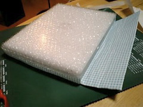
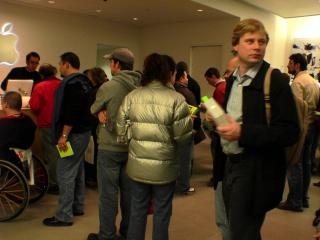
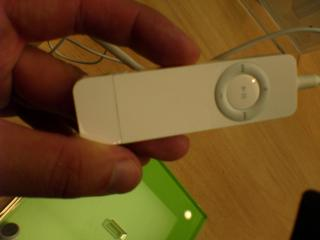
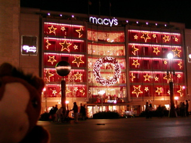
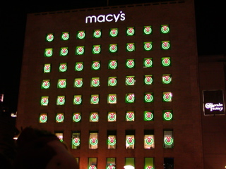
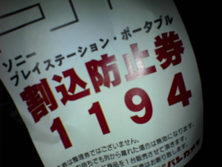

2006年01月26日
Path Finder 4.0リリース
でるでると言ってなかなか出てなかった Path Finder 4.0。
Tiger インストール以来、導入を見合わせていたけど先日ついに出た。
"Slow cooked to Perfection"、だそうで。
前のバージョンからの無償アップグレードのオファーがあったのでこりゃ使わない手がないでしょうということで導入。
前も迷ったけど、Safari でダウンロードしたファイルを "Finderで表示"とかができない。
これはちょこちょこっと Path Finder のパッケージをいじればいいんだけど毎回忘れてしまうのでメモ。
Why doesn't clicking on a folder in the Dock show up in Path Finder?
パッケージの中にある、Contents以下の "PkgInfo"ファイルの中身を“FNDRMACS”と書き換えて再起動。
たいした手間じゃないけどアップデートのたびにやるのがチョット面倒。
Finderと完璧に置き換えてしまう強烈な技もあるけども、安定度を見極めてから・・・。
I’d like to replace Apple’s Finder with Path Finder. Is that possible?
投稿者 yusuke : 03:04 | コメント (0) | トラックバック
2006年01月20日
新日鉄ソリューションズが深夜残業、休日出勤を全面禁止
NikkeiNet Bis-Plus より
新日鉄ソリューションズが深夜残業、休日出勤を全面禁止
SIer はサービス残業、タクシーで帰宅、休日出勤が日常的に行われている風土ですからなんとも素晴らしい試みです。
優秀な人材の確保や、業務効率の向上に大きな効果がありそう。
規則が形骸化してしまわないよう努力して是非業界全体に広めてもらいたいところ。
ちなみに私の会社では、今いるサンフランシスコのオフィスでは１６時くらいには人がポロポロ帰り初めて、17:30にはほとんどみんな退社してしまいます。
日本人は仕事一辺倒の生活からスペアタイムを充実させる方向へとシフトしてゆとりのある人生を送るべき！
「早く帰るのはデキるヤツだ」という空気を作りましょう！
投稿者 yusuke : 04:13 | コメント (0) | トラックバック
2006年01月19日
そうだ、クッキーを作ろう！
一つのホストで20コまで、とか一つあたり4kまで、とかいうアレじゃないです。
食べられる方。
全くの初心者なのでまずは Safeway で簡単！との触れ込みでうってるチョコチップの入ったクッキーミックスを買ってきました。
1. 混ぜる
卵、バターと粉をまぜる。
バターは softened but not melted なのを使えという微妙な表現。どういう意味だろ？
構わずレンジで溶かしてから混ぜてしまいました。

2. 並べる
買ってきてあるクッキングシートを広げて・・・あれ、どっちが表だろ？
くっつかないようにするための物だからたぶんツルツルしてるほうだろう、と思うけど裏表違いがわからない！
特に説明書きもないからどっちでもいいんでしょう。
こんなの常識なんだろうけどもやったことないとわかりません。

3. 焼く
ウチのオーブンには "bake" と "broil" の２つのモードがある。broil だと上側が、bakeだと下側が熱くなるらしい。
今回プレート２枚、上下に並ぶことになってしまったので bake 5分、 broil 5分 で半分ずつで焼いてみることに。
・・・
いや、間違いでした。上段がコゲコゲ。
broilで上から焼くのは強すぎるみたい。
下段はキレイにやけた。

4. 食べる
えーと、サラダと高野豆腐とお茶漬けを食べた後なのであんまり食べる気しません。
すんごーく甘い香り。
投稿者 yusuke : 15:13 | コメント (0) | トラックバック
2006年01月17日
プリペイド携帯天国アメリカ
プリペイド式携帯といえば日本では犯罪の温床になると締め付けが強まっていく一方ですが、アメリカはプリペイド式携帯は大人気です。
以前はプリペイド携帯は音声通話+SMSだけのシンプルなサービスできたが最近はカメラ付きやテレビ電話機能付き、MP3(?)再生機能付きなど通常の携帯にひけをとらないサービスが展開されてます。
匿名携帯電話による犯罪がどうこうとか心配してもしょうがないレベルなのでしょう(?)
でも観光客とか短期滞在者のニーズを考えるとうれしいことです。
どの会社も「no contract!」(契約なし)を合い言葉にしていて、購入に身分証明書やサインを求められることはありません。
ビザのない観光客でもメキシコから国境を越えてやってきた社会保障番号のない不法移民でも簡単に使えます。

写真の私が持っている携帯は京セラ製でもう４年前くらいのやつ。ちょっと今となっては天然記念物的なデカさ。
でも電池はほっといても１週間くらい持つし、十分使えます。
このデカさは今となってはむしろセクシーかも。
これは Virgin Mobile というキャリアのもので、文字通り Virgin グループが展開しているもの。
支払い方法には幾つかオプションがあるんだけども、基本的なシステムは
・１分25セント(着信も受信も)
・top-up(チャージ)は最低$20
・90日間top-upしないとチャージ分も電話番号も無効になる
といったところ。top-upはVirginやセブンイレブンでtop-upカードってのを買ってきてシリアルナンバーをWebか携帯(初回は不可)、または電話で口頭で伝えれば良い。
電話でオペレータに頼む方式だと90日以上過ぎて無効になってた分を復活させてくれることもあるらしい。
（っていうか一度してもらった）
というわけで米国に訪問するときにはお勧めです。
国際電話も着信できるので(コレも1分25セント)、電話する用事がなくても緊急用としてもってると安心、オススメです。
どこのキャリアもサービス内容はだいたい一緒なのでCingularでもT-mobileでもVirginでも手近なヤツを買えばよいと思う。
電話機本体は$10分のtop-upがついて$50〜$150位。
日本みたいに携帯と固定電話で 03- / 090- といった区別はなく普通の固定電話風な番号が割り当てられます。
Virgin Mobile は実際には基地局やネットワークは持っていなくて T-mobile の回線を借りてます。
で、Virgin Mobile も T-mobile も基盤に WebLogic Server を使ってるってのが興味深いとこ。
http://www.intel.co.jp/business/casestudies/virgin_mobile_usa.pdf
http://www.bea.com.tw/2005/BEAWebLogicCommunicationsPlatform.pdf
Virgin Mobileのホームページ行くとあらゆるリンクが .do になっていて Struts を使っている感タップリ。
http://www.virginmobileusa.com/
投稿者 yusuke : 17:15 | コメント (0) | トラックバック
2006年01月15日
おそうじその２
今日は弓をうちに行こうと思ったけどちょいと雨模様だったのでまたおそうじを。
冷蔵庫の上：
なにやらスーパーのビニール袋が散乱してる！
どけたらホコリだらけ！フキフキしました。
洗面所：
鏡、蛇口を拭いてピカピカに。
コミ箱がなにかとホコリやら水気やらで汚れがこびりついていたので洗って窓際に放置。
バスタブ：
まだシミが気になるところを漂白。
蛇口を拭いてピカピカに。
オーブン：
扉の外側は油まみれ、内側は細かい汚れが良く焼けてこびりついてる。
がんばってこそぎとった。

家事のデキル亭主を目指してまだまだがんばります。
投稿者 yusuke : 09:52 | コメント (0) | トラックバック
2006年01月13日
おそうじ
ウチの奥様はかなりきれい好きです。
あと一週間ほどで彼女が来るので、それまでに受け入れられる程度にしておきたいと思います。
・床
カーペットであんまゴミとかホコリとかの存在は確認できません。
一応初日に掃除機かけた。また週末にかけます。
・風呂
シャワーカーテンを漂白
バスタブをごしごし。落ちない汚れは漂白。
・冷蔵庫
細かいゴミを取り除くいてふき掃除。
誰ですか！？醤油こぼしたままにしたのは！！
あと、いつの時代からあるかわからない干からびてカチンカチンになったブルーベリーが一粒落ちてました。
・コーヒーメーカー
出来る限り分解してゴシゴシ。
分解しきれず届かないところは綿棒でゴシゴシ。
落ちない汚れは漂白。
・電子レンジ
こびりついた汚れはレモンをチンすれば簡単に落ちるってテレビで見たなー。しかもちょうど良くしなびたレモンが冷蔵庫にある！RIOナイス！
チンッ♪ ゴシゴシ。
む、なかなか良い感じに汚れがとれました。
・シンク
シンクは洗剤がこびりついていつのまにかくすんでしまいます。
たぶん去年ヨメさんが持ってきたと思われる激落ちスポンジでゴシゴシピカッ！
さすがドイツの発明品。良く落ちます。
・コンロ周り
蚊取り線香みたいなやつの周りにある輪っかを外して洗う。
去年は「そこまで掃除するか！？！？」と思ってましたが今では普通となった自分がいます。
なんと油汚れがついていることか！！
あとコンロテーブル全体を中性洗剤をひたしたキッチンペーパーでゴシゴシ。ぬれぞうきんでゴシゴシ。
だいぶキレイになったかな？
投稿者 yusuke : 09:47 | コメント (0) | トラックバック
鏡開き
1月11日は鏡開きだ！ってことで昨日JapanTownへ行って餅とレトルトのお汁粉を買ってきました。
がっ、モチを焼こうとしたらアルミホイルがないことに気がついて昨日は断念。
今日はちゃんとアルミホイルを買ってきて一人でお汁粉を楽しんでます。
日本時間ではすでに２日遅れの鏡開きですが。
投稿者 yusuke : 09:47 | コメント (0) | トラックバック
2006年01月12日
iWeb所感
1. 静的なhtmlを生成して、手動で好きな場所にアップロードできる
OK。
[ファイル>フォルダに公開]でローカルの好きな場所に書き出せる。
2. .Macにブログを公開してコメントやトラックバックはできるのか？
できない！iWebが静的なhtmlやRSSを書き出すだけ。URLは
http://web.mac.com/アカウント名/iWeb/ になる。
3. .Mac以外のスペースにブログを公開してコメントやトラックバックはできるのか？
.Macでできないくらいなんだから当然できない。
4. .Mac以外のスペースにFTPやSFTP、WebDAVでブログ、ポッドキャスト等をアップロードできるのか？
できない。ローカルに書き出した物を手動でアップロードする必要あり。
というわけでiWebはかなりかなりかなりシンプルなアプリケーションです。
Appleデザインなだけあってそれなりにキレイなサイトが作れるのは良い。
DnDで軽快にデザインできたり、iLifeアプリと連携して簡単に手元にあるメディアを呼び出せたりするのはさすが、といったところ。
今回試しに作ってみたのはこれ↓
http://web.mac.com/yusuke/iWeb/
あと、blogツールとしていまいちな点がまだ・・。
・エントリーの日付を編集できない
エントリーを起こした日付か、更新した日付にしかならない。
自分はblogで良くやる１，２日経ってから過去の日付で書くような事ができない。
・エントリにカテゴリを設定できない
あまりボリュームのあるblogは書けないなぁ。
まぁ、blogツールとしては期待してなかったけどあまりのシンプルさにちょっとがっかり。
投稿者 yusuke : 15:25 | コメント (0) | トラックバック
iLife '06インストール
国際化はどうなっているだろうかと思っていたけどもディスクを挿入した瞬間に心配は吹っ飛びました。
なにしろディスクを入れたそばから日本語で表示されてるんだもの。さすがMac。

インストールには約7GB必要。
ディスクスペースに余裕がないときはGarage Bandを真っ先に外しましょう。
只今インストール中。
投稿者 yusuke : 12:45 | コメント (0) | トラックバック
iLife '06購入！
PowerBook(MacBook Pro)衝動買いはせずに済んだのでiLifeを買ってみた。
日本語のリソースが入っているか分からないけど少なくともマルチバイトは通るでしょう？と英語パッケージを見切り発車で購入。パッケージでiLifeを買うのはなんだかんだ初めてかな？
しかしMacWorld開催中なのでサンフランシスコのアップルストアはめちゃめちゃ混んでた。普段から混んでるけど。
お目当てはiWeb。

今回からパッケージはものすごく小さくなった
パッケージに含まれているのは
・iWorkとJamPackのパンフレット
・iWorkのトライアルDVD
・簡単なインストールマニュアル
・iLife '06インストールDVD
・役に立つことはないであろうソフトウェアクーポン
気になるポイントは以下の通り。順次チェックしていきます。
1. 静的なhtmlを生成して、手動で好きな場所にアップロードできる
まさか.Mac固定ってことはないだろからさすがにこれはできるでしょう？
2. .Macにブログを公開してコメントやトラックバックはできるのか？
きっとできる？
3. .Mac以外のスペースにブログを公開してコメントやトラックバックはできるのか？
movabletypeとかと連携してくれたらすごいけどきっとできない。
4. .Mac以外のスペースにFTPやSFTP、WebDAVでブログ、ポッドキャスト等をアップロードできるのか？
せめてFTP、WebDAV位には対応しておいて欲しいとこ。
さてさて、インストールしてみましょうか。
追記：どうやら日本でも既に売ってるらしい！
http://blog.livedoor.jp/applebrothers/archives/50289179.html
投稿者 yusuke : 12:20 | コメント (0) | トラックバック
2006年01月11日
Keynote スピーチ終了
大きなのは intel iMac と intel PowerBook(MacBook Pro)でしょうか。
1)intel iMac が即日販売
intel inside シールはなさそう
「２倍のスピード。感動も２倍に」
今まで浮動小数演算で比較していたのを整数演算で比較するというトリック？
2)MacBook Pro
PowerPC じゃなくなったので Power を外したらしい。
#PowerPCになる前からPowerBook、PowerMac だったけど？？
「４倍のスピード。ついに願いは現実に」
・iSight、FrontRow対応、Apple Remoteコントローラ付属
自然な流れ
・MagSafe コネクタ
足を引っかけてもラップトップが机から落ちることがない、磁石で吸着してる電源ケーブル。これはいい！
ACアダプタが正方形だったのが微妙に縦長になってる。
・重さは2.54kg
変わらない、っていうか現行よりちょっと重め？
・高さは2.59cm
薄くなるって噂ありましたが。ちょっと残念。
・FireWireポートは400Mbpsが１基
800Mbpsのポートは静かに削除・・・。
・モデムは別売り
大抵のホテルではEthernetかワイヤレスが装備されるようになったけど、ちょっと不安だなぁ・・・
・バッテリーがリチウムポリマーに
リチウムイオンと比べてどんな特性の違いがあるのかしら？
投稿者 yusuke : 04:25 | コメント (0) | トラックバック
さて、MacWorldでは？
先週金曜日からサンフランシスコ入りしてます。また３ヶ月滞在の予定。
アパートがMacWorldを開催しているモスコーニュセンターのすぐ近くなので今日はなんだか人が多い！
近所のスターバックスではPowerBookをいじっている人が５人くらい！
さて、今年はどんな新製品が飛び出すんだろうか？

投稿者 yusuke : 02:11 | コメント (0) | トラックバック
2005年11月15日
iPodケース
こちらは２週間前くらいにつくったもの。
ビデオiPodのケースは市販されてなかったので作った。
材料費は500円(貼れる布100円x2、ウレタンバッグ100円、ハトメ200円)。
ケースに入れたままケーブルを繋げられるのが便利。
・iPodケース自作

作り方はiBookバッグと同じような感じ。クッションは薄くするためエアバッグではなくウレタン製の100円のバッグを使った。
投稿者 yusuke : 23:27 | コメント (0) | トラックバック
2005年11月14日
iBookケース自作その2 - 完成
足りなかった布を調達したので残りの仕上げた。
材料費は300円(貼れる布100円x2、マジックテープ100円x1、家にあったエアキャップ0円)。
なかなかの出来。
・iBookカバー自作その2

投稿者 yusuke : 23:22 | コメント (0) | トラックバック
2005年11月13日
iBookケース自作その１
iBook専用、とかPowerBook専用のケースは高すぎる。
汎用のケースはウレタン製のなら100円ショップでも売ってるけどサイズが合わずぶかぶか。
必要以上に高い物は買えない。ない物は作れ！、というわけで自作するあげることに。
材料は100円ショップで買ってきた「貼れる布」、とエアキャップ。
・iBookカバー自作その１

ところが必要な面積を全く計算しておらず、材料が足りないので本日は未完成。
投稿者 yusuke : 00:41 | コメント (0) | トラックバック
2005年11月11日
メニューバークロック
Panther に移行してからメニューバーが不便。
昔の OSX にあった NSTimeFormatString ってパラメータをいじることでカレンダーを表示させるトリックが効かないので、時計しか表示させられない。
仕事中なにかと日付を知りたくなることがあるけど、毎回時計をクリックして日付を表示させるか、Dashboardを呼び出してカレンダーを見ないと行けない。
で、ちょっと探してみたらあるわあるわ、みんなデフォルトの時計に不満なのかいろんな種類のメニューバークロックがあった。
でもたいしたことないのに $20 とかするのが多くて選別に苦労した。最終的に残ったのがこれ。
・MenuCalendarClock
http://www.objectpark.net/mcc.html
メニューバークロック＋カレンダー＋iCalまたはEntourageの連携機能をもったユーティリティ。iCalとEntourageとの連携機能以外はフリーで使える。
フォーマットも自由に選べるのでばっちり。
アメリカ人は24時間表記使わないからか、デフォルトでは２４時間表示を選べない。
時刻部分に「%1H:%M」と指定してやればOk。ヘルプにも書いてあるけど一応。
投稿者 yusuke : 00:39 | コメント (0) | トラックバック
2005年11月02日
Smash the penguin!
ペンギンをこん棒（？）で吹っ飛ばして飛距離を競うロシア生まれの極悪非道なゲーム。
クリックするとペンギンの飛び込み開始、もう一度クリックで振りかぶるだけ。
いまのところ記録は297.1。なるべくペンギンの頭付近をなぐると良いらしい（ひでぇ！）
挑戦者モトム！
http://mk-piter.ru/articles/1389.htm

ペンギンを待ちかまえる銀色ゴリラ（よく見たらゴリラじゃなくて雪男らしい)
あまりに無防備なペンギンの様子からして二人は憎しみ合っているのではなく、それなりの競技志向をもって臨んでいることが伺える。だから思い切り殴って良い。
投稿者 yusuke : 10:57 | コメント (10) | トラックバック
2005年10月11日
歯医者へGo!
今年の１月ごろ、歯の詰め物がとれた。
海外出張中だし、３ヶ月に渡る出張の頭だったのですぐに歯医者に行くわけにもいかない。
とりあえず歯をしっかり磨くことでその場しのぎしよう！・・・・・のつもりが帰国後もあれよあれよと時間が過ぎて９ヶ月も経ってしまっていた。
また出張に行くのでそれまでに直しておけと妻のお達しでしぶしぶ歯医者に行くことに。
２年以上歯医者いってないからまた細かい虫歯見つけて掘られちゃうんだろうなーとかなり憂鬱。
定期検診に来いとハガキが来てたのも無視してたわけだから先生と会うのは気まずい・・・。
しかし、診察してみると「お、数ヶ月放置してた割には穴もキレイだね、他の歯も新しい虫歯はないよ」とのこと。
詰め物ものの３０分ほどで復活し、あとは他の詰め物の細かいガタつきをなおした程度で終了。何度も通う覚悟してたけどもなんともあっけない。
やっぱ歯磨きはちゃんとしないとね。毎食後フロス＆リステリンしてて良かった。
投稿者 yusuke : 23:06 | コメント (0) | トラックバック
2005年10月01日
刀削麺
に行った。
http://r.gnavi.co.jp/g923200/
有名っぽい中華麺屋。
最初は三田のラーメン次郎に行こうということで同僚に誘われていったのだが、あまりの行列に断念して刀削麺(とうしょうめん)になった。
名前の通り麺の元となる塊を特殊な刀（っていうか曲がったへらみたいなもの）で削った麺がでてくる。

職人が麺を削りだしているところ
かなりこってりとした油で覆われた麻婆豆腐っぽい味付けのスープは絶品！
麺は表面はつるつるしていて中身はもちっと、かつほどよいコシがあって飽きさせない。大盛りにすれば良かったとちょっと後悔。
油の膜があるので湯気は全然でないけれども中身はほどよい熱さが保たれている。
麺はかなりぶっといのでのびることなく最後の一本まで楽しい食感。

ラーメンとほうとうのハーフみたいな雰囲気？
禁断症状がでるほどうまいという話はウソではない。まじうまかった。
T澤さん、ありがとうございました！こんどは次郎いきましょう！連れて行ってください！
投稿者 yusuke : 01:13 | コメント (1) | トラックバック
2005年09月20日
おい！こんなとこで自殺すんな！！！
深夜に車を運転していたらびっくり！交差点手前のガードレールにもたれかかってL字型になってる人がいた。
しかもガードレールから吊られるような形でポーチが首に掛かってる。
あれれ・・もしかして死んでる？
死んでなくてもこの姿勢じゃすぐに足轢かれちゃうよ・・・。
ハザードを焚いて車を止め、おそるおそる近づいた。
目をつぶってピクりとも動かない・・・。よくみたらポーチはガードレールには掛かってなかった。
「トントン、大丈夫ですか？」
肌を触っていきなり冷たかったらかなり衝撃的なので、まずはジーパンを叩いた。
全然反応がない。
ちなみにすぐそばにマウンテンバイクがはやりガードレールにもたれかかってる。
変形してないので轢き逃げではなさそうだ。
「ドンドン、大丈夫ですか？」
全然反応がない。しかしジーパンから温もりは感じられてないが、若干湿り気があるので生きているか、少なくとも死んでしばらくたった様子ではない。
「ぴしゃぴしゃ、大丈夫ですか？」・・・ほっぺたを叩き、冷たくないことを確認してから一応脈を見る。ん、生きてる。
ナゾの物体X「うぅ・・ぐぐ・・・」
おぉ、反応があった。
「ほら、こんなとこで寝てたら危ないですよ、とりあえず歩道にいきましょう」
ナゾの物体X「んぅぅ、いや、大丈夫だから・・・ｽﾋﾟｰ」
こらこら、寝るな。大丈夫じゃないから。今実際轢きそうになったし・・・。
ちょうどそこへお巡りさん登場。後で妻に聞いた話によると、「おぉーここにいたかー」とか言ってたとのこと。誰かが通報してくれたらしい。
通報するのはいいけど危ないから路上に足のばしたままの人放っておくなよ・・・。でも死んでるように見えるから怖くて通報してすぐどっかいっちゃったのかな？通報したら駆けつけるまでその場にいるよう言われるはずだけど。
とりあえずお巡りさんの職質開始。
お巡りさん「ほら、どうしたの？だいじょうぶ？」
X「んん・・・」
お巡りさん「みんな心配してるじゃないの。危ないよこんなとこいたら」
X「あぁ、大丈夫ですから」
立ち上がったものの目はまだ半開き。
お巡りさん「この自転車乗ってきたの？どこに行くの？」
X「武蔵浦和・・・」
え？ここ高島平だぞ・・・。武蔵浦和まで自転車でいったら3、４０分かかるぞ・・・。
お巡りさん「名前と住所教えてくれる？」
X「んん、大丈夫ですから・・」
どうやら盗難自転車かどうか疑いはじめたらしい。もうどうでもいいのでその場を後にした。
自殺現場発見、じゃなくて良かった。
投稿者 yusuke : 00:36 | コメント (3) | トラックバック
2005年08月29日
クロイツフェルト・ヤコブ病の血液からの検出が可能に
なったらしい。
http://www.tokyo-np.co.jp/00/kok/20050829/mng_____kok_____003.shtml
安価に検査できる方法が確立できたら輸血も再開できるかな。
発病前でも検出できるかどうかは現在調査中とのこと。がんばれ。
しかし感染してるって結果がでたら悲しいな・・・。逆に輸血するの怖いかも。
投稿者 yusuke : 16:30 | コメント (0) | トラックバック
2005年08月27日
おサイフケータイでピッとおトク！[店長代理、よりご連絡]
メールで突っ込みを入れたら翌日電話があった。なんとも早い対応！
内容は時間をとらせてしまったこと、不快な思いをさせたことに対する謝罪と具体的な改善策を挙げてくれた。
・社員教育の再徹底
・お客様の求めていることを理解した上で充分な回答、応対をする姿勢の徹底
->メールでblogのURLを示したので、読んでいただいた様子
・ケータイへのポイントカードの移行手続きの簡略化の検討
をするとのこと。
謝るだけだったら「で、具体的に何をどう改善するつもりなんですか？」とちょっといじわるな(?)質問をするつもりだった。
平謝りするだけでなく、真摯な姿勢で具体的なアクションプランを挙げて対応してくれるのが素晴らしい。
もともとヨドバシカメラ好きだけども新宿を通らなくなりしぶしぶビックカメラを使っていた。
今回の一件でむしろビックカメラ寄りになったかも。
細かいところだけれども、追加で
・店内POP案内の改善
を提案した。
現状ケータイをつかうと3%ポイントアップする旨の表示はされているだけ。なので多くのお客様は一旦レジに出向いて、そこで初めて総合案内カウンター？で登録しなければいけないことを知らされる。この段階で面倒だから登録をあきらめてしまう人も多いのではないかと思う。
あらかじめ「登録は総合アンナイカウンターへ」みたいな表示がされていれば人の流れもスムースになり、登録率も上がるのではないでしょうかという提案。
こちらについては早速POP作成担当に連絡して改善しますとのこと。3%ポイントアップキャンペーンは残り４日くらいしかないけども。
Edyの電子マネーに対応していないことについてはもちろん向こうも認識しているようだけども、オトナの事情がありそうなのであんまりつっこまなかった。SuicaとEdy両方対応しているお店ってみたことないので排他的な契約になっているのではないかと想像。または設備投資がかさむから現状DoCoMo以外のユーザでも使えるSuicaだけを選択しているのかも。
返品処理を最初拒否したのは根本的にマニュアルに違反しているらしい。やはり返品処理をできる権限を持っている人、持っていない人がいるとのことで、必要に応じて権限を持っている人を即座に呼び出すよう指示されているらしい。
投稿者 yusuke : 14:24 | コメント (3) | トラックバック
おサイフケータイでピッとおトク！[後半 - どうして住所また書かないといけないんですか？]
おサイフケータイをビックカメラで使うには一旦登録をしないといけないということでサービスカウンターへやってきた。
「すいません、これを登録したいのですが」
店員「はい、かしこまりました。それではこちらの書類に記入をお願い致します。」
住所、名前、電話番号などを書く欄がずらずら。閉店間際だしさっさと帰りたいので面倒なことは任せてしまおうと
「一通りの情報は既に手持ちのポイントカードにひもつく形で登録されてますよね？なんでそちらで処理してもらえます？」
店員「新しいカードへの移行という形になりますので住所やお名前などを書いて頂く必要がございます」
あれ、通じてない？
「いや、そうじゃなて、御社で既に私の個人情報をお持ちのはずですので、それを利用する形で登録してもらえれば楽なんですが。」
店員「ご本人様の確認のために記入して頂く必要がございます」
んーん？住所や名前書いたって本人確認にはならないでしょう・・・。しかもなんだか「この客うるさい、いいからさっさと納得してくれないかなー」ってな態度が見え見えで目も合わせずに説明してる。
もう最初から書いてた方が早かったな・・・。別に２通３通DMが舞い込んできても構わないので個人情報が流出だとか管理がずさんだとかわめきたいわけじゃないんだけども。
「では免許証とか見せればOkですか？」
店員「いえ、カードの移行になりますので住所やお名前が必要になります。」
うーん・・・、聞き方が悪いのかな。
「私の言っている意味分かります？それと、あなたの答えが答えになっていないことも・・・」
店員「・・・・・、恐れ入りますが詳しいことはポイントカードセンターへお問い合わせいただけますでしょうか。」
「いや、いちいち住所名前書くのが面倒だから聞いただけであって、それ以上に手間暇かけるつもりはないんですが・・・」
店員「そうですね・・・でも移行といってもあくまで新しいポイントカードの契約という形になりますので直筆でご署名や住所を頂く必要があるんです。」
なんだよ、答えをもってるじゃないの。それが聞きたかったことなのに、なんでそれを早く言わないの？
「なるほど。わかりました。それが聞きたかったことですよ。」
考えてみれば以前とは住所変わってるので何にしろいつかのタイミングで住所を更新する必要があったことを同時に思い出した。
以前の登録先である実家にDMとか送って欲しくないので、登録とポイントの移行が完了したところで聞いてみた
「この移行前のカードの登録情報を抹消してもらえますか？」
店員「あ、いえ、削除とかそういうことではなくポイントは新しいカードと、このケータイに移行されていますのでご安心ください」
どうしてこうもかみ合わないんだろう・・・・。
「んーと、ポイントが消えるかもとかそういうことは心配してません。前の住所にダイレクトメールを送って欲しくないという意味です。」
店員「はい。以前の情報は責任をもって削除させていただきます。」
結局なんだかんだと２,3０分くらい時間がかかってしまった。
しかもおサイフケータイを登録しても電子マネーとしては使えず、単に会員証の替わりになるだけらしい。実質8%割引の野望はついえた。なんとも紛らわしい・・・。
6000円くらいの買い物をしたので余分につくポイントは180円分くらいか。来月からは普通のポイントカードと同じだろうし、30分も時間かけたんじゃとても元は取れないよ・・・。
「こんなうるさい客がいたんですよ・・。」みたいな感じでもいいから上にレポートがいって、接客が将来改善されるこをと期待しよう。
投稿者 yusuke : 00:10 | コメント (2) | トラックバック
2005年08月26日
おサイフケータイでピッとおトク！[前半 - ポイントのキャンペーンは来月からになります]
今日はビックカメラへ買い物に行った。
レジに並ぶ瞬間「おサイフケータイでピッとおトク！キャンペーン！３％ポイントアップキャンペーン」というPOPが目に入った。
おぉ、Suicaに続いておサイフケータイにも対応したか！
おサイフケータイの5%キャッシュバックキャンペーンと合わせれば8%も特になるってことでレジでお願いをした。
「あ、おサイフケータイでポイントアップっての見たんですけど」
店員「ポイントのキャンペーンは来月からになります」
なんだ、早まったか、と思い溜まっていたポイントで商品を購入・・・・しているときにさっきのと同じPOPを見つけた。「期間は8月31日まで」とか書いてある。あれ？
「すいません、あれ今月中って・・」
店員「えぇと、今月お買いあげ分に対して上積みの3%が来月加算される形になります」
・・・なんだよ、さっきと説明が違わない？
「なるほど、それならやっぱりケータイでお願いしますよ」
店員「もうポイントカードからの精算をしてしまいましたので・・・」
なんだそりゃ、あんたのおかしな説明でポイントつかうことになったんでしょ。返品処理できないシステムなわけないし。
「いや、だから一旦返品扱いにしてケータイで精算してください」
店員「承知致しました。少々おまちください。」
なんだかその店員は返品処理をする権限がないのか他のスタッフを呼ぶ。
・・・店員「少々おまちください。」・・・店員「少々おまちください。」・・・店員「少々おまちください。」・・・店員「少々おまちください。」・・・店員「少々おまちください。」
５分くらい待たされる間ほぼ１分間隔でハートビートモニタ用のパケットが飛んでくる。丁寧なのはいいけどあんま聞かされると一層待ち時間が長く感じてしまうものね・・・。
上級店員「お待たせ致しました。ポイントの返還と、携帯でのポイント処理ですね。携帯の登録はされていますか？」
「へっ？してませんよ。」
上級店員「申し訳ございません、あらかじめ登録が必要になりなすので一階の窓口で登録をお願い致します。」
なるほど、GEOと同じで会員証も兼ねられるのか。８％のためならがんばるぞ・・・・。
投稿者 yusuke : 23:51 | コメント (1) | トラックバック
「Rio」販売終了、全世界で撤退
だそうだ。
http://headlines.yahoo.co.jp/hl?a=20050826-00000032-zdn_n-sci
RioはMPman(だっけ？)に続いて比較的初期のころからあったMP3プレーヤブランド。
一時期は「MP3プレーヤといえばやっぱRio?」くらいの立ち位置を確保していたのでなんだか残念。
Nike とのコラボモデルが発売されており、なかなかカッコいいのでもっていたけれども素早く曲送りをすると液晶画面がフリーズするという現象に遭遇した。最初故障かと思って交換を繰り返していたけれどもいっこうに直る様子がないので根本的なバグっぽく、１年近く使い倒したあげく返品してその足でiPodを買ったという経緯がある。
どうも故障しやすく返品・交換率も高いと店員がいってたのでそういうのが積み重なったのだろうか。
やっぱiPodの使いやすさ、ブランド力にはかなうのは難しいかな？
投稿者 yusuke : 23:15 | コメント (0) | トラックバック
2005年08月19日
Toast Titanium 7
ってのが９月に発表されるらしいと Think Secret に。
Roxio readying Toast 7 for release (images)
・DivX 6 を含む様々なフォーマットに相互にトランスコード
・PSP向けのエンコード
・２層の大容量DVDを1層DVD向けに圧縮
とかとか新機能がいっぱい。iPSPもDVD2Oneもいらなくなりそう。
現行Toast6のユーザのアップグレードパスはあるのかなーと期待していたら早速連絡が。
既存ユーザは２週間早く、$30オフで購入できるとのことで早速買ってしまった。

投稿者 yusuke : 09:30 | コメント (5) | トラックバック
2005年08月08日
献血 -> 破棄
今日会社のビルで献血をやっていたので抜いてもらいにいった。
前回の献血からなんだかんだと時間があいてしまい９ヶ月ぶり。
いつも通り病歴、海外渡航歴とかを答える用紙に見慣れない項目が。
・１９８０年から１９９６年の間に英国に１日以上滞在した (はい・いいえ)
うーん、1980年前後に３年間デンマークに滞在してたけど、イギリスにはいったかな？
たぶん行ってないでしょう - 「いいえ」 とマーク。そして血液の比重は問題なくいつもどおり400ml献血。
しかし、もの心もつかない頃の渡航歴についてはちょっと自信がなかったので念のために親に聞いてみることに。
父親から返ってきた答えは「たぶん、その期間（イギリスに）行ってる、詳しくは母に聞け」
ありゃりゃ。もったいないけど片づけ始めているスタッフのところへ駆けつけて渡航歴についてグレーである旨を話した。
「やっぱ行ってませんでした」とかいってキャンセルした血液を差し戻すことはできないそうで、なにがなんでも破棄することになるとのこと。まだ元気なのにかわいそうなヘモグロビンや血小板達。できることなら輸血し直して欲しい・・・。
ちなみに今回の措置は6月1日から始まったもの。一生献血できないと決まったわけではないらしい。
・１９８０年から１９９６年の間に英国に１日以上滞在された方からの献血見合わせ措置に関するＱ＆Ａ
http://www.mhlw.go.jp/new-info/kobetu/iyaku/kenketsugo/7m3.html
検査技術や統計が発達してまた献血できるようになることを祈ろう。ちなみに母親は昔のパスポートをしらべてくれた。やっぱり81年の4月11日にイギリスに行ってたらしい。ビンゴ。
投稿者 yusuke : 22:21 | コメント (2) | トラックバック
2005年08月05日
オークション詐欺？チャリンカー？
最近ヤフオク等ではチャリンカーと呼ばれる種類の詐欺が横行しているらしい。
・危険なチャリンカー商法とは
http://allabout.co.jp/computer/netauction/closeup/CU20050405A/
しばらくの間格安で良い品を提供して高い評価を得て、一時的な振り込み金額が多額になると雲隠れするという。
特に発送まで時間を要する旨の説明がある出品者は注意しろとのこと。
Yahoo！オークションではこう説明している。
>商品説明に「発送期間が長い」という説明があった場合、手元に商品を持っていない可能性も考えられます。万一、詐
>欺などの被害にあっても、Yahoo!オークション補償を受けることはできません。そういった取引をすることができる相手
>かどうか慎重に判断しましょう。
> 出品者が、落札後に商品を調達するような可能性を示唆していませんか？
> 入金確認から商品発送までの期間が長いということはありませんか？
この文章を読んでもチャリンカーについて知らなければ、多くの人は「評価が高いし問題ないでしょ？」ってな感じで特に疑問も感じずに入札してしまうでしょう。
っていうか恥ずかしながらそういうのに先日入札してしまった・・・・。結果を言えば最終的には返金してもらえたので良かったけれども、チャリンカーについて知ってればそもそも入札しなかったと思う。
Yahoo!は利用料や出品マージンを徴収しているのだから利用者が安心でき、詐欺などの被害に遭わないよう勤める責務があると思うが、とてもその役目を果たしているとは言えないのが残念な実情。
投稿者 yusuke : 00:42 | コメント (1) | トラックバック
iTunes Music Store
が日本でもオープンしたので早速試してみよう・・・・と思ったけどだめだった。
プリペイドカードで補充して残高があると使い切るまで他の国のストアは利用できないらしい・・・・。残念。
投稿者 yusuke : 00:38 | コメント (0) | トラックバック
2005年08月02日
Mighty Mouse
Apple が新しいマウスを発表した。
真ん中にトラックパッドが埋め込まれていて上下左右自由にスクロールできるみたい。
左利きにも優しく左右対称なのがすばらしい。Bluetooth じゃないのが残念。
http://www.apple.com/jp/mightymouse/
コンセプトとしては logicool のV500 と同じか。こっちはコードレス。
http://www.logicool.co.jp/index.cfm/products/details/JP/JA,CRID=2135,CONTENTID=9508
投稿者 yusuke : 23:21 | コメント (0) | トラックバック
2005年07月25日
@Nifty解約
中学生だか高校生の頃入会したNifty-Serve(現@Nifty)。
長い間使っておらず、毎月300円取られるのはもったいないのでようやく解約することに。
解約しようにもパスワードを忘れていてオンラインの手続きができずずっとおっくうだった・・。
ちょっと調べてみると、電話で解約手続き用の書類を郵送してくれるらしい。
・ @nifty自動応答ダイヤルとは・・・
http://www.nifty.com/support/information/auto_dial.htm
サポートにダイヤルして、「3 解約申込書のご請求」を選択、登録されている電話番号と会員番号の５桁の数字をプッシュするだけでOk。書類になんか記入しなければいけないのは面倒だがパスワードが分からなくても解約できそうだ。良かった良かった。
しかし、@Niftyにはパソコン通信時代から会員になっていて使われていないアカウントがまだたくさんあるのではないだろうか。毎月最低３００円何もしないで収入になるのはいいなぁ・・・。
投稿者 yusuke : 11:54 | コメント (0) | トラックバック
2005年07月24日
Brita ゲット
兄夫婦に Brita を貰った。
Brita はピッチャー型の浄水器。蛇口へ取り付けたりしなくていいので気軽に使える。
水圧で押し出すんでなくて水自身の重みで自然とろ過される仕組みなので感覚的にもしっかりろ過されて、またフィルタが長持ちしそう。
水道をジャージャー使えるので楽！
スーパーでへいちいち汲みに行かなくて済むので楽！
フィルタ代をちょっと計算したけれども1リットルあたり5円にもならない。
こりゃ素晴らしい！
・Amazon - Brita 
・Amazon - Brita 交換用フィルターカートリッジ |

{kind=link}
投稿者 yusuke : 22:46 | コメント (0) | トラックバック
2005年07月23日
献血
をしにいった。
問診をうけたり比重をはかったりして Ok がでて、いざ血を抜かれる直前に「これ見てくださいね」といういつものチラシを渡された。
・献血後は十分休息を
・直後に激しいスポーツはするな
とかとか書いてあって普段はほとんど読み流していたけれども、一つ気になる文言が
・当日の飲酒はするな
あれれ、この後飲みに行くんだけど・・・。
飲んだらどうなるのか聞いたところ、脱水症状になって具合が悪くなることがあるとか。
下戸なのでそんな飲まないと思うけど、念のため今日はやめておいた。また時間を作って行こう。
投稿者 yusuke : 01:27 | コメント (0) | トラックバック
2005年06月15日
Remote Desctop Client メモ
リモートデスクトップ接続を有効にするには
[マイコンピュータ->プロパティ->リモート->リモートデスクトップ]で
[このコンピュータに・・接続する子とを許可する]にチェック。
ポートは3389番が使われるので必要に応じてファイアウォールを開ける。
投稿者 yusuke : 12:36 | コメント (0) | トラックバック
2005年06月03日
Windows XP環境の移行
新しいノートが支給されたので移行をした。
実は実際支給されたのは１週間以上まえだったんだけど作業がめんどくさくてほっといた。
そいうえば移行ウィザードみたいなのがあったなーと思い出して実行してみることに。
http://www.atmarkit.co.jp/fwin2k/operation/fstransferwiz_xp/fstrans_02.html
ちょっとやってみたらうまく移行先のPCを発見してくれなかった。ブロードキャストで発見するので同じサブネットにいないといけないらしいんだけど(あたりまえといえばあたりまえ)ちょっと違ってた。
しょうがないのでネットワークケーブルを直づけして 192.168.1.1 と 192.168.1.2 って適当な IP アドレスをでっちあげてみた。ストレートケーブルでつなげたけどちゃんと PING が通るようになった。Mac みたいに勝手に認識してひねってくれるようだ。でもウィザードは相変わらず移行先のPCを発見してくれない。
なんとなく移行ウィザードを再起動したらうまくいった。ウィザードを起動したあとにネットワーク設定を変えても認識してくれなかったみたい。
MacOSX の移行アシスタントみたいにアプリケーションまでは転送してくれなかったけど、だいたいの書類や設定はコピーされたっぽい。めでたしめでたし。
投稿者 yusuke : 14:50 | コメント (0) | トラックバック
2005年05月28日
結婚した！
一応、入籍だけはしていたけれども、しっかりと結婚式という形でお披露目させて頂いた。
新郎新婦アンカリングの図
ちょっと遠かったのと、披露宴の席がいっぱいだったのでほとんど親戚だけで行ってしまいました。
「もうちょっと近ければねー」「連絡急すぎ！」と言ってくれた方、申し訳ない＆ありがとうございます。
天気の良い中、皆様に祝福され大変幸せです。
投稿者 yusuke : 23:52 | コメント (4) | トラックバック
2005年05月26日
Wordフリーズ
Word の(自分にしては)高度な技、差し込み印刷機能をつかってみた。
プレビューをしようとすると Word がフリーズする。もうクラッシュしかかっているのか、MS のクラッシュレポータが起動するけどそれもフリーズする。なんてこった。

とりあえず差し込みデータをテキストではなく Excel で作ったら回避できた。
差し込み印刷に関するメモ
・差し込み機能の有効化は [ツール - 差し込みマネージャ] & 差し込みマネージャ の[作成 - カタログ]
・[取り出し-データ文書]でデータソースの選択
・プレビューでフリーズする現象は差し込みデータを Excel にすると回避できる
・まとめて印刷は(たぶん)できない。差し込みマネージャで一つ一つ表示するデータを切り替えながら印刷していくのが流儀らしい
投稿者 yusuke : 13:30 | コメント (0) | トラックバック
2005年04月20日
PostgreSQLインストール
新しい PowerBook に PostgreSQL をインストールしたのでメモ。
-------
$./configure
<中略>
configure: error: readline library not found
If you have readline already installed, see config.log for details on the
failure. It is possible the compiler isn't looking in the proper directory.
Use --without-readline to disable readline support.
------
なんか良くわからないけど readline ってのがみつからないらしい。
ないとどうこまるのか知らないけどとりあえず言われるがままに --without-readline というオプションを付けてみた。
------
$./configure --without-readline
<中略>
$make
<中略>
All of PostgreSQL successfully made. Ready to install.
$ su - postgres
Password:
postgres$
$ sudo make install
$ sudo mkdir /usr/local/pgsql/data
$ sudo chown postgres /usr/local/pgsql/data/
$ su -l postgres
$ /usr/local/pgsql/bin/initdb -D /usr/local/pgsql/data
$ export PATH=$PATH:/usr/local/pgsql/bin
<中略>
Success. You can now start the database server using:
/usr/local/pgsql/bin/postmaster -D /usr/local/pgsql/data
or
/usr/local/pgsql/bin/pg_ctl -D /usr/local/pgsql/data -l logfile start
$ /usr/local/pgsql/bin/postmaster -D /usr/local/pgsql/data &
$ /usr/local/pgsql/bin/createdb --encoding unicode データベース名
$ /usr/local/pgsql/bin/psql データベース名
これでデータベースの作成、接続まで出来た。
JDBCから接続するためには、
postgresql.conf を変更してソケット接続を有効に
#tcpip_socket = false
↓
tcpip_socket = true
pg_hba.conf に以下を追加
host all all 192.168.0.0 255.255.0.0 trust
んで再起動すればOkだった。
投稿者 yusuke : 23:11 | コメント (0) | トラックバック
2005年04月16日
反日運動
が盛んということで騒ぎになっているみたい。
メディアは連日大変なことになっていると報道しているけれども実際のところ中国内での雰囲気はどんなものなのかつかめない。
もしかするとこのテのデモは色んな物事を対象として繰り返し行われていて、たまたま矛先が日本のデモがちょっと行われただけなのか。それとも１２億人全員が一丸となって日本を目の敵と認識しているのか。
気になるので北京のオフィスに勤める中国人の同僚(?)にチャットで聞いてみた。
Q. デモ起きてるけどどんなかんじ？
A. 学生とか日本大使館に詰めかけて抗議してるみたいね
Q. デモが政府にサポートされて行われてるようなことはないの？
A. そんなことはない
Q. 政府はまともにデモを抑止しようとしないみたいだけど
A. 民衆の矛先が政府に向いては困るのであまり厳しくとりしまることができないの
Q. つまり、国民もそれを承知の上で安心して暴動を起こせると？
A. そういうこと。でも暴動ってほどひどいもんじゃなくて、もっとスマートに整列して行われてるよ。
Q. なんか日本のお店（イトーヨーカドー）が襲撃されたって話があるけど
A. そんな話はこっちでは報道されていないなー。政府は事を大げさにしたくないから報道規制してるはず。
Q. このテのデモはしょっちゅう起こるの？
A. そうでもない。でもときどき。前回大きかったのは米国相手にあったやつ。
Q. まぁ中国の意志としては日本は誠意を持って戦後補償に努めて欲しいと。
A. そゆこと。ドイツなんかはしっかり謝罪してるしね。日本も見習うべき。
Q. 君は参加した？
A. いや、してない。でも友達から一緒に行こう！って色々誘われた。
聞いただけで全貌がつかめたわけじゃないけれども、中国と日本で報道内容に随分と温度差があるのははっきりした。
平和を求ム。
16:42:08 Yngwie: hi Tony,
16:42:17 Tony: Hi, Yngwie
16:42:20 Yngwie: lemme ask some question,
16:42:25 Tony: Ok
16:42:26 Yngwie: it's not about WLS :p
16:42:32 Tony: :-)
16:42:47 Yngwie: some news resources say there are some demonstration against Japan
16:42:53 Tony: Yes
16:43:08 Yngwie: how's the situation like?
16:44:17 Yngwie: i'm not quite understanding but , it is said no one has been arrested regarding the demos,
16:44:36 Tony: Some students and people go to Japan embassy to protest Japan
16:44:39 Tony: Yes
16:44:40 Yngwie: and it is said the demos are supported by the government in some way.
16:44:54 Yngwie: i c
16:45:54 Yngwie: i'm not familiar with historical background, but i know we did bad thing in China in the past.
16:45:58 Tony: I think so because China govement don't want Japan be a member of UN permanant director
16:46:29 Yngwie: yeah, China gov can't say directory in order to keep the relationship ,
16:46:42 Tony: Yes
16:47:22 Yngwie: so government supports the demo indirectly ?
16:47:27 Tony: And because the Japan Govement always don't like to say sorry for World war II
16:47:44 Yngwie: by not suppressing the demos.
16:48:08 Tony: Yes.
16:48:22 Tony: And the govement can not suppress it too
16:48:50 Yngwie: do you think the gov "can not" suppress?
16:48:58 Tony: Otherwise, the govement will be lose the support of China people
16:49:07 Tony: It is not like 1989
16:49:16 Yngwie: it is said that the gov doesn't try to suppress the demos , in Japan.
16:49:33 Yngwie: i c
16:49:34 Tony: It is similar as 1998, the US bomb China embassy
16:49:41 Yngwie: yup
16:50:06 Tony: It is not protest China govement, so the govement can not suppress it
16:50:11 Tony: :-)
16:51:29 Yngwie: so the government is trying to keep the wants to keep the national loyalty by not suppressing them
16:51:48 Tony: Yes
16:52:28 Tony: It is a good chance for govement to keep loyalty I think
16:52:35 Yngwie: who has the root-initiative of the demos?
16:53:18 Yngwie: by citizen ? or by the gov?
16:53:29 Tony: By citizen
16:53:31 Tony: From network
16:54:18 Yngwie: ic
16:54:42 Yngwie: colud it be controlled by the government ?
16:55:12 Tony: I don't think it controlled by govement.
16:55:18 Yngwie: i c
16:56:34 Yngwie: Japan should take initiative to support WW victims and say sorry about that politely...
16:56:43 Tony: Yes
16:56:50 Tony: Just like German
16:57:00 Yngwie: but the way China government is not reasonable, i think
16:57:24 Tony: It is difficult for govement to controll it
16:57:31 Yngwie: i c
16:57:43 Yngwie: to me, it is very unusual
16:57:49 Tony: If they suppress it, the peaple will protest govement and things will be serious
16:57:53 Tony: Yes
16:58:13 Tony: For general people, we don't like politics
16:58:14 Yngwie: no matter what the demo is for, the government will suppress it. in Japan.
16:58:48 Tony: We only suppress those protest against govement. :-)
16:58:53 Yngwie: i c
16:58:57 Yngwie: that's bad,
16:59:05 Tony: But US, you can do any kind of demos
16:59:36 Yngwie: i guess, what China lack is democracy and 陳謝 from Japan.
16:59:47 Tony: Yes
17:00:41 Yngwie: the difficult thing is Japan don't want to say sorry directly,
17:00:51 Yngwie: but Japan is supporting China economy in many way.
17:01:20 Yngwie: i want it convince China.
17:01:39 Tony: Yes. But China don't ask war compensate after world war II
17:01:58 Tony: Which make Japan economy can recover soon.
17:02:42 Tony: That's why Japan govement give economy support to China
17:02:57 Yngwie: i c
17:03:49 Tony: China people don't hate Japan people. But we can not accept the Japan govement's activity
17:04:37 Yngwie: that's similar situation between Japan and the US
17:04:49 Tony: Yes
17:04:59 Yngwie: we never forgive the Hiroshima and Nagasaki nuclear bombs,
17:05:05 Yngwie: but we don't hate Americans.
17:05:21 Tony: But the two countries are neighbors. China don't want another war between the two country
17:05:51 Tony: I believe the Korea people have same feeling
17:06:06 Yngwie: yeah, we asia should get tied up.
17:06:19 Tony: If Japan govement do similar things as German, i believe things we be better
17:07:06 Tony: For asia, the most important thing is tied up to develop economy
17:07:18 Yngwie: that's true
17:08:18 Yngwie: thanks a lot
17:08:31 Yngwie: things became clearer to me
17:09:13 Tony: :-) I was very busy the day(on a customer case) when things happen. So I just get information from friends
17:10:03 Yngwie: is it an unusual thing to join demos?
17:10:11 Yngwie: or does it happen frequently?
17:10:26 Yngwie: i mean , not only against Japan
17:10:35 Tony: Not frequently but some times
17:10:51 Tony: Before 1989, students like demos against govement
17:11:18 Tony: but currently, there are few such things
17:11:20 Yngwie: it's 天安門事件, right?
17:11:24 Tony: Yes
17:11:37 Yngwie: i see, but it does happen.
17:12:02 Tony: As I remember, twise
17:12:07 Tony: One is for US,
17:12:11 Tony: One is this one
17:12:50 Yngwie: it's about the bombing to the 領事館?
17:13:01 Tony: Yes
17:13:15 Tony: People destroy part of US embassy in Beijing
17:13:50 Tony: It is more mildness this time
17:13:56 Yngwie: i c
17:14:23 Yngwie: and people know they are safe during the demo, right?
17:14:30 Tony: Yes
17:14:34 Yngwie: because the police won't arrest them.
17:14:41 Tony: Right
17:15:03 Yngwie: that's very bad for public safety
17:15:17 Tony: But it is well orginized
17:15:27 Yngwie: really, how?
17:16:14 Tony: A lot of people orginzed in one place then walk to Japan embassy in line. New people join the line
17:17:29 Tony: I recieve a lot of message from different friends to invite join it that day
17:17:33 Yngwie: i c, but it's not just a demo, but it is also a riot, the news source says.
17:17:57 Tony: No, Not a riot
17:18:14 Yngwie: i heard people threw stones and glasses were broken.
17:18:42 Yngwie: did you hear that ?
17:19:07 Yngwie: or it's done by just very few crazy people?
17:19:08 Tony: No
17:19:15 Yngwie: i c
17:19:21 Tony: I think just some crazy people do it
17:19:38 Yngwie: we have different new sources,
17:19:49 Tony: Yes
17:20:02 Yngwie: and things are coming different way...
17:20:06 Tony: China media report few things on it
17:20:39 Tony: Govement don't want make it more seriously
17:20:40 Yngwie: none can realize the truth.
17:20:53 Tony: What's I got is from network
17:21:30 Yngwie: I heard that Japanese grocery store was attacked seriously.
17:21:59 Tony: Maybe it is true
17:22:21 Yngwie: the medias tend to tell only bad stories for Japan.
17:22:29 Tony: yes
17:22:39 Tony: Every country has same things
17:22:41 Yngwie: we need to know the background , truth.
17:22:47 Yngwie: yup
17:22:53 Tony: You never get real news for things
17:23:00 Yngwie: yeah
17:23:04 Tony: In USA, it is same
17:23:38 Tony: My friends in US always get two versions of news for same thing
17:23:46 Yngwie: do you mind me posting this conversation to my blog?
17:23:55 Yngwie: haha, that could happen.
17:24:19 Tony: :-) It is ok if you like
17:24:30 Yngwie: k, thx.
17:24:52 Yngwie: i want my friends to know what China people think, generally.
17:25:45 Tony: Yes. I think both govement should know other country's people's idea
17:26:07 Tony: For Chinse, we don't like war with any country
17:26:25 Tony: Because we have badly harmed by war
17:26:38 Yngwie: we think , too
17:28:13 Tony: Before, all asia country are attacked by west country. Then Japan become a strong country and then attack his neibour. And then US attack Japan and the war finished
17:28:20 Yngwie: every country should throw away their pride,
17:28:40 Tony: The only winer is US I believe
17:28:44 Yngwie: they think what is good for economical growth.
17:28:49 Tony: Yes
17:28:51 Yngwie: yea, that's true.
17:29:53 Tony: I don't like US govement because it always do things the other country don't like
17:30:47 Yngwie: yeah , and we need to obey , unfortunately.
17:31:03 Tony: Yes.
17:31:25 Tony: Only a one gient country is not a good thing for the world
17:32:00 Yngwie: oh, but plz don't have a war with US.
17:32:11 Tony: yes
17:32:11 Yngwie: in that case, Japan should support US :((
17:34:58 Tony: China will not have war with US
17:35:36 Yngwie: there's a very interesting comic book
17:35:36 Tony: Because if there is such a war, the whole world will be in a mess
17:35:49 Yngwie: it's about moon development,
17:36:02 Yngwie: US takes the leadership,
17:36:17 Yngwie: and China doesn't support the project
17:36:39 Yngwie: and China and US has a small space war secretly.
17:36:39 Tony: :-)
17:37:12 Yngwie: it sounds very realistic in some way.
17:37:42 Tony: Yes. In North Korea, China has a war with US and US lose
17:38:05 Tony: That's why there are two Korea
17:39:04 Yngwie: yeah
17:39:08 Tony: But it is difficult for China have another war with US currently because both country has nuclear weapen
17:39:35 Yngwie: it'll be the end of the world..
17:39:41 Tony: Yes
17:40:23 Tony: So althgouth there are conflict for the two country, there will be no war
17:40:43 Yngwie: I heard Japan has enough resource and technique to have nuclear weapon.
17:41:03 Yngwie: we can't do that because it is restricted by the law.
17:41:05 Tony: The only possilbe reason is Taiwan but I don't think US will join the war directly
17:41:15 Yngwie: yeah
17:41:45 Yngwie: China has very strict stance about Taiwan.
17:41:48 Yngwie: it's very bad, too.
17:45:17 Tony: Yes
17:51:36 Yngwie: thanks for the conversation.
17:51:45 Yngwie: let's keep the world peaceful;)
17:51:53 Tony: Yes. :-)
投稿者 yusuke : 01:08 | コメント (0) | トラックバック
2005年04月08日
矢を作る
アメリカのアーチェリー屋に注文した矢はいまだ届かない。ちょっとミスショットをしてたらどうしようもなく矢数が減ってきたので日本のお店でひとまず買うことに。
シャフトのカット、ポイント、ピンノックをつけるところまでやってもらった。
プロの仕事はさすがに綺麗！
そこそこお勉強をしてもらったので思ったより安かった。
今日は名前を入れて羽根をつけて矢を完成させた。

まずは名前を入れる

お次は名前が消えないようコーティング

最後に羽根をつけて終わり
投稿者 yusuke : 23:08 | コメント (0) | トラックバック
氷大サービス
今日、会社の自動販売機（お金入れなくて良いので正確には販売していない）で爽健美茶のボタンを押したら、
ガリガリガリ（氷の出る音）
・・・・
ガリガリガリ（氷の出る音）
・・・・
ガリガリガリ（氷の出る音）
ジョーーーー（爽健美茶を注ぐ音）
なんだか氷がめちゃめちゃ多い。溢れてる。

溢れすぎ！
投稿者 yusuke : 20:18 | コメント (2) | トラックバック
2005年04月06日
1.5GHz/2GB/15"=¥244,440
今日は注文しておいたメモリが来た。
Toycomp ってMac系のサイトで良くバナーを見かけるお店で注文した。
http://www.toycomp.com/
1GB の PC2700 200pin DDR のメモリが¥21,800、２枚で¥43,600と代引き手数料¥800で計¥46,620ナリ。
kakaku.comで調べる値段よりは安い。
1GB のメモリも出た当初は12万円くらいした気がするけど随分とまともな値段になったものだ。
フロッピーディスクが1000円くらいで帰るようになって「安い！」とか、秋葉原の神和電気で256kbのメモリを¥7,000位で買ってポケコンのメモリを増設した時代はどこへやら・・・。
結局実質¥244,440で2GB/1.5GHz/15"のPowerBookが手に入った。安い買い物じゃないけど、良い買い物をした。
2GBもあると VirtualPC の実用度がとても向上した。今までブラウザの検証程度にしかつかってなかったけどWebLogicだろうがOracleだろうがまともに動くんじゃないだろうか。
MacOSXでも十分動くけど。
投稿者 yusuke : 00:04 | コメント (0) | トラックバック
2005年04月05日
PowerBook15"購入
ほんのちょっとの CPU 速度差と、外付けで既に持っている DVD ライタのために数万円の差額の価値はあるのかなーと迷っていたので Combo ドライブモデルがあればそっちにしてくれ、と一週間前にお願いしていた。
ヤマダ電機よりようやく連絡があり入荷したとのこと。
SuperDrive モデルはまだ入荷日未定だそうだ。
#今AppleStore を見ると即日出荷なので、すぐに入荷するかな？
値段はなんと税込み￥219,800で、さらに10%ポイント還元。実質¥197,820と 12"の SuperDrive モデルより安い。
ヤマダ電機恐るべし。
投稿者 yusuke : 09:48 | コメント (0) | トラックバック
2005年04月03日
後輩の試合を応援に
少しはコーチっぽいことをしないと。
（日記には書いていなかったけども）先週に引き続き今週も後輩のリーグ戦の応援へ行った。
午前中は神奈川の明治学院大学。
http://waseda-archery.homeip.net/archives/000013.html
午後は埼玉の東洋大学。
http://waseda-archery.homeip.net/archives/000014.html
東京を縦断して忙しい一日だった。でもどちらも勝てて良かった。
今しかできないリーグ戦、精一杯射ちきってくれ、後輩達。
そして自分も彼らに負けないぞと誓う。
投稿者 yusuke : 23:32 | コメント (0) | トラックバック
2005年03月31日
駆け込み需要
ガソリンの卸値の高騰に伴って４月から小売価格も上昇するとの話なので、駆け込みでガソリンスタンドへ。
近所で比較的安いところに行って１リットル109円。先週末に知っているところで一番安いスタンドは106円だった。
まぁ悪くないと思い満タンにしながら店員に確認。
自分「やっぱ明日から値上がりするんですか？」
店員「はい。アーチェリーやってるんですか？」
え！？この人何者だ？
お金を渡すときに指のタコを素早く見分けたのか・・・・それとも・・・どこかの大学で同期か後輩だった人？？？
自分「え、なんで？」
店員「いや、だって弓とか矢とかがありますよ・・・」
あぁ、なるほど。後部座席に弓が置いてあった。
でも以前だったらこれを見てアーチェリーとはわからなかったんじゃないかと思う。
きっとアテネ五輪の山本さんの活躍のおかげ？
投稿者 yusuke : 22:02 | コメント (0) | トラックバック
FS Discount Archery
いつも利用しているアーチェリー用具屋さん。
http://www.fsdiscountarchery.com/
以前はサイトは単なるカタログでしかなく、注文は FAX で行うか直接電話するしかなかったんだけれどもいつのまにかオンラインショッピングできるようになってる。儲かってるんだろうか？
しかしお目当ての X10 シャフトがない・・・。なぜかピンノックだけ売っている。
しかたないので備考欄にシャフトとポイントも注文に入れてくれ、入力。
注文完了のメールは届いたけれども2週間ほど音沙汰なし。確認のためメールに返信したら宛先不明で返ってくるし。
後は電話するしかないかなー。ちゃんとしてくれ・・・。
投稿者 yusuke : 09:48 | コメント (0) | トラックバック
2005年03月30日
健康診断
をしてきた。
なぜかウチの会社の健康診断は採血をしてくれない。
胸部レントゲン、尿検査、視力、聴力、身長、体重、内科検診のみ。
今年も半分検査目当てで献血をしよう・・・・と思ったら出張から帰ってからまだ２週間しか経っていないので出来ず。
最近の献血ルールでは海外渡航後１ヶ月空ける必要があると去年言われた気がする。
まぁ、健康だと思うけど２週間したら血を抜いてもらおう。
投稿者 yusuke : 22:42 | コメント (0) | トラックバック
2005年03月22日
PowerBook のゴム足が・・
はずれ、ACアダプタが断線したのでアップルストアへ行った。
サンフランシスコのアップルストアと同じく対面修理、サポートをしてくれる Genius Bar は Web から予約できる。
時間は空いている一番早い時間を勝手に指定されるので朝イチに夕方の予約をとるようなことはできないみたい。
混雑具合にもよるんだろうけれどもだいたい１時間先くらいの予約になる。17時過ぎに予約したら18:25となった。
https://genius.apple.com/customer/?store=R079
ゴム足は良くとれるみたいで無料で付けてくれる。今回で２回目。もうとれないといいけど・・・。
ついでなので、まだ入荷しないヤマダ電機をさしおいてPowerBookに在庫があるのかどうか聞いてみた。
やっぱ直営店は優先的に入荷しているのか在庫があるとのこと。
ヤマダ電機の予約票を見せてお勉強をお願いしたら同等の値段(税込み259,800円)にしてくれるとのこと。んーでもポイント還元分には対応できないとのことなのでヤマダの方が実質25,980円安い。まだ待とう。
iPod Shuffle は 1GB/512MB モデルともにいっぱい在庫がある様子で飛ぶように売れていた。
投稿者 yusuke : 06:44 | コメント (0) | トラックバック
2005年03月16日
ヤマダ電機めちゃ安っ！
新しく出たPowerBook欲しい！
ヨドバシカメラで272,790円。5%還元なので実質259,150円
アメリカでは$2,299なので、カリフォルニア州の消費税7.5%を足すと＄２,４７１。つまり１ドル104円以下ならばアメリカで買うと安い計算。
出張中は104円前後と微妙なラインだったのでためらった。あと JIS キーボードが欲しいし。なにしろ Control キーが A の横にあるのが良い。
帰国したので早速ヤマダ電機で値段を聞いてみると、259,800円とのこと。
自分「んー、ヨドバシよりちょっと高いですね、(ヨドバシの実質の値段をみせて)もうちょっとお勉強できません？」
店員「ヨドバシさんはそれからどれくらいポイントつきますか？、ウチならこれから10%ポイントつきますが」
うわ、安い！実質233,820円だ！コンボドライブのバージョンの定価と同じくらい。
ただし在庫がないとのことなので、予約をすることに。
他のお店に在庫があって買っちゃった！とかならキャンセルしても良いとのことなので、ヨドバシやビックカメラで相見つもりをとってみた。
ヨドバシは何かのキャンペーン中だとかで、272,790円に対してオンラインサイトより2%ポイント余分に、7%つくとのこと。実質253,694円。
ビックカメラは272,790円に対して10%。実質245,511円。
ヤマダの予約票を見せてお勉強できないか聞いたところ、無理だと。「ヤマダ電機は原価割れしている可能性があるので」とかとんでもないことを言われた。
とにかくヤマダ電機は安かった。
ちなみに Amazon は 272,790円に2万円のギフトで実質252,790円。むむ、ヨドバシよりは安い。なかなかがんばってる。
ついでに 価格.com では 262,800円が最安値。あれれ、調べた中では一番高い。
http://www.kakaku.com/prdsearch/detail.asp?PrdKey=00209012516
投稿者 yusuke : 06:47 | コメント (2) | トラックバック
2005年03月07日
ペプシを飲んだら
iTunes Music store のダウンロードチケットが当たったので使ってみた。

普通にアカウントを登録しようとすると日本のクレジットカードじゃアカーン！と怒られる。
ちょっと調べたら普通の登録のリンクではなく、Prepaid Cards のリンクを使えばOkとのこと。
ペプシの場合はミュージックストアのトップ画面に出てるペプシのロゴをクリックすればOkだった。
住所は今住んでいる場所を入力した。
要は米国内の住所をいれれば良いんでしょう、日本から登録する場合なんかはAppleStoreの住所を登録するなんて技があるみたい。
しかしさすがはApple。一度登録したらとにかく簡単。視聴して、購入。
やっぱ技術は良質のインターフェースが伴わないと本領発揮しない。
買ったのは最近なんだか話題のマイアヒとiPod のCM曲である U2 の Vertigo。
もうだめだ、何語だかわからないけど「ダルシム」とか「飲ま飲まYeah!」とかしか聞こえない。
ペプシのダウンロードチケットはペットボトルの裏をのぞけば当たりかどうか買わなくてもわかっちゃう、って話を聞くけど慣れないとよくわからない。何となくかったら３本中２本当たりだった。
でも会社でどうせコーラは飲み放題だし、プリペイドカードはAppleStoreで売ってるんでもういいや。次はプリペイドカードを買おう。
投稿者 yusuke : 21:34 | コメント (2) | トラックバック
2005年02月26日
H2Aロケット
の打ち上げを楽しみにしていたのだけれども、若干異常が見つかったとのこと。
種子島は夕方かもしれないけどサンフランシスコはもう夜です。眠い、まてない。お休みなさい。
投稿者 yusuke : 00:32 | コメント (0) | トラックバック
2005年02月25日
bloglines
ってとこからウチのサーバへの訪問してくる方が多いので試してみた。
オンライン RSS リーダみたいなものみたい。
http://www.bloglines.com/
Web検索でちょっと勢いのある Ask Jeeves が運営しているらしい。
閲覧中の blog を簡単に登録する bookmarklet が用意されていたりしてなかなか使い勝手はよい。
日本語版だけ特別に「お勧め blog」 というチャックのしめ忘れを教えてくれるという親切機能付き！

投稿者 yusuke : 12:48 | コメント (2) | トラックバック
2005年02月24日
まったく同じfavicon、似ているロゴ
SunのbugdatabaseとCTCのホームページのfaviconは全く同じ！
なんかのhtmlエディタのデフォルトなのだろうか、それとも・・・・それとも！？！?

Sun の bugdatabase より引用※
http://bugs.sun.com/bugdatabase/index.jsp

CTCのfavicon、ホームページより引用※
http://www.ctc-g.co.jp/

BEAのロゴ、ホームページより引用※
http://jp.bea.com/
※ 画像中のロゴ、会社名、favicon 等は(恐らく)各社の商標または登録商標です
一応ハッシュを調べてみる
$ md5 /bugparadefavicon.ico
MD5 (/bugparadefavicon.ico) = b25dbe60830705d98ba3aaf0568c456a
$ md5 /ctc-gfavicon.ico
MD5 (/ctc-gfavicon.ico) = b25dbe60830705d98ba3aaf0568c456a
まるで一緒。
投稿者 yusuke : 11:11 | コメント (2) | トラックバック
2005年02月22日
スーパーマン
がクリプトン星に帰ったらしい。
フィットネスクラブのテレビでラリー・キングライブをやっており、奥さんが出演していて知った。
#ちなみに今日も３マイルくらい走った
彼が脊髄の怪我をしたこと、それを支えながらの困難な生活、またそれにも負けず快活に生きていた様などを涙することもなくじっとカメラを見据えて話していた。さすがスーパーマンの奥様、強い。
去年もやはりCNNで何人もの人に支えられながらトレッドミルで操り人形さながらに歩くリハビリテーションをしている姿を放映しており、その様は鬼気迫るものがあった。１日でも早くの回復を祈っていたのだけれども残念。
彼の一切の私財を投じて発足したクリストファー・リーブ麻痺財団は今も脊椎神経再生医療の研究や、障害者の生活助成に貢献しているらしい。
http://www.apacure.com/
投稿者 yusuke : 19:30 | コメント (0) | トラックバック
2005年02月17日
なんとなく似てる
あら、CTC とBEAはどういう関係なのかしら？
CTCのfavicon、ホームページより引用※
http://www.ctc-g.co.jp/
BEAのロゴ、ホームページより引用※
http://jp.bea.com/
共著があったり、ビジネスパートナーだったりするけれども、favicon の意匠の由来が気になる。
※ 画像中のロゴ、会社名、favicon 等は各社の商標または登録商標です
投稿者 yusuke : 10:32 | コメント (0) | トラックバック
2005年02月14日
MDR-NC6

を買っ（てもらっ）た。
SONY製のノイズキャンセリングヘッドホン。
この手の商品としては比較的廉価な製品で$100を大幅に切る。
スティーブ・ジョブスは iPod があれば日本-アメリカ間ずっと違う曲を聴き続けられるぜ、とか言っているけども飛行機の中は相当うるさくて音楽を聞くのも映画をみるのもなかなかままならない。
耳栓をしてからヘッドホンをしてみたりとかバカなことをやってみたけども（あたりまえだけども）まともに聞こえないので結局音量をでかくしたり、聞かなかったりしていた。
ノイズキャンセリングヘッドホンがかなり雑音を低減してくれるということで空港にはこの手の商品がいろいろならんでいるけれどもブランドものはなかなか高いので手を出しかねていた。
以前ヨドバシカメラでも探したんだけど安くても１万円強してしまう。
ところがこの前近所のSony Style(リアル店舗）でこれを発見。
バレンタインのプレゼントにと奥様に無理矢理おねだりしてゲット！
デザインはソニーらしくカッコイイみかけ。周囲の音の逆位相の波をぶつけるため、左右にマイクが埋め込まれているわけだけれどもこれがうまくデザインにとけ込んでいてごっつくない。
パッドは耳に完全に覆い被さるのではなく平べったりスポンジがまんべんなく耳に当たるタイプ。アームの伸び縮みも細かく調整できてかけ心地は良好。
ノイズキャンセリングに必要な電源は単四電池１本、アルカリ電池で30時間、マンガン電池で15時間と大変経済的。
ニッケル水素の充電池でも10〜20時間くらいはもつのかな？
キャリングポーチや飛行機ようのアダプタが付属しているのもうれしいところ。
さて、電源をオン！
「ｽｰｰｰｰｰｰｰｰｰｰｰｰｰｰ」
ん、ちょっとホワイトノイズが聞こえるぞ？？奥様のサイバーショットから奪った電池の充電が足りないのかな？
調べてみると静かなところではそういうもんだとのこと。電車や飛行機で効果を発揮するらしい。まぁあたりまえか？
というわけで飛行機、電車に乗るのが楽しみになりました。
投稿者 yusuke : 22:40 | コメント (4) | トラックバック
2005年02月06日
スーパーボウル
を観た。
アメリカで絶大な視聴率を稼ぐゲームとして聞いたことはあるけれども観るのは初めて。
簡単に言えばスーパーボウルはアメフトのリーグ、NFL における頂上決戦。
アメフトはハードなスポーツのためかシーズン中も週一くらいしか試合がない。
スーパーボウルも１回勝負。だからなおさら視聴率をかせげるのかな？
今年は前年度の覇者パトリオッツ(パトリオットは愛国者、の意)と初優勝を狙うイーグルスとの対決。
接戦の末パトリオッツが24対21で勝ったみたい。会社にイーグルスの本拠地フィラデルフィア出身のイーグルス狂がいるので、ちょっと応援していたけど残念。
ハーフタイムではポール・マッカートニーが派手な舞台装置で歌ってた。
Drive my car,Get back, なんかポール・マッカートニーのソロ曲,Hey jude とビートルズのナンバーをかなり並べてみんなノリノリだった。生ポールは初めてなのでちょっと感激。
投稿者 yusuke : 23:58 | コメント (7) | トラックバック
2005年02月04日
Text Wrangler2.0
ってのを見つけた。
元々 BB Edit Lite って名前だったもの。
以前 BB Edit を試したときはサポートしているエンコーディングの種類の少なさか使用を断念した。
よくよく見れば普段使うエンコーディングを初期設定が出来ることがわかった。
有償版 BB Edit 8.0との比較もあるけどもかなり十分機能がそろってることがわかる。
特にタブもサポートしてるのが気にいった！
最近良いエディタがないものかとフラついてたけどもこれで決まり！
投稿者 yusuke : 21:32 | コメント (0) | トラックバック
2005年01月15日
SF MOMAへ
アパートのすぐそばにある SF MOMA へ行った。
今はコミックタッチのアートで有名なリキテンシュタインの作品も展示中。
まぁ、比較的わかりやすいのからなにこれ？なものまで。
ちょっとゲージツしたくなった。
投稿者 yusuke : 21:48 | コメント (0) | トラックバック
2005年01月11日
just shuffle them!
今日は Macworld Expo の基調講演。
残念ながらAppleのblogソリューションは発表されなかったけどわくわくさせてくれる製品、ソフトが目白押しだ。
新しくなった iPhoto は使いやすそう。
mac mini は小さくてかわいい。
iPod shuffle は普通のUSBメモリより安いという挑戦的な値付け。
ダウンタウンの AppleStore にあるというので衝動買いしてみようかと仕事後見に行ってみた。

市内どこを向いても見える iPod shuffle の広告。午前中までは普通の iPod の広告だった
Apple Store にいくと iPod shuffle を買う人でいっぱい！

iPod shuffle を買う人だかり
{kind=link}
買おうかどうしようか・・と迷ってるうちに売り切れた。
ま、いっか。
こんな感じで展示されてる
{kind=link}

こんなにちっちゃい
{kind=link}
投稿者 yusuke : 14:12 | コメント (2) | トラックバック
2005年01月04日
来週はMacworld
家のすぐ隣はMoscone Center。東京ビッグサイトや幕張みたいに展示会をやるところ。
年初はMacworld Conference & Expoをやるのが恒例で新製品が良く発表される。

市内でよく見かける広告
新しいハードウェアの発表も楽しそうだけども.mac/iPhotoと連携したblogソフト/サービスなんかが出ないかと期待。
投稿者 yusuke : 17:48 | コメント (0) | トラックバック
2005年01月01日
It's STILL new year's eve.
今年は一人でちょっと寂しい年越し。でもNiijyaのおかげでちょっと雰囲気が出た。

昨日Nijiyaで買った年越しそば
ユニオンスクエアではカウントダウンイベントがあるっぽいけどなんだか天気が悪いので家でテレビを見てることに。
テレビでは既にパリやロンドン、ニューヨークの年越し風景が流れててなんか妙な感じ。
タイムズスクエアではかなり厳重な警戒態勢が敷かれているらしい。来年はも少し平和になるといいけど・・・・。
投稿者 yusuke : 16:06 | コメント (2) | トラックバック
2004年12月30日
Ocean Beach へ Go!
弓を引いた後は近くの Ocean Beach まで足を伸ばした。
散歩をしようと思ったけども弓があるのでやめた。
堤防のコンクリートの上に15分くらい寝そべりぼんやり。
だだっぴろい浜辺に癒された。

Ocean Beach の絶景。右奥の方に見えるのは Cliff House
投稿者 yusuke : 10:29 | コメント (0) | トラックバック
2004年12月27日
クリスマスのあとはクリスマス
以前家族旅行でニューヨークかどこかに行ったときにびっくりした。
クリスマスが終わってもクリスマスっぽいから。
日本だと26日になると瞬時に門松が立てられてお正月を予感させるけれども、アメリカはしばらくクリスマス気分だ。
当たり前かもしれないけれどもサンフランシスコも例外ではない。
クリスマスまではクリスマスセールをやっていて、クリスマス後にはアフタークリスマスセールをやっている。
ユニオンスクエアのバカでかいクリスマスツリー
{kind=link}
お正月気分を味わえないのはざんねんだけど、これはこれで綺麗だからいいか？

macy's のバカでかいクリスマスリース
{kind=link}

macy's のうじゃうじゃクリスマスリース
{kind=link}
投稿者 yusuke : 09:54 | コメント (0) | トラックバック
2004年12月12日
PSP！
なんだかかっこよさげなので PSP を買いに行った。
徹夜をする気力体力はないけどもちょっとがんばって始発で新宿へ。
朝5時40分についたけども既に1000人以上の人が並んでた！徹夜組もいるのかな？
並ぶと整理券ならぬ割り込み防止券というものをもらった。
列からはずれたら買える保証はないということらしい。

割り込み防止券は1194番
{kind=link}
昨日は暖かかったのに今日は雪が降りそうな寒空！
自分で買いたくて買うオトナはいいけどサンタさんや子供につきあって来ているお母さんはかわいそう・・・。
列の動きはかなり鈍く２時間以上並び続けてようやく８時前くらいに買えた。
買ったのはメモリカードやリモコンのついたバリューパックではなく通常版。
15000円のNintendo DS とは比べものにならないくらい高級感がある。大満足。
投稿者 yusuke : 14:57 | コメント (4) | トラックバック
2004年11月30日
ddclient の OSX へのインストールメモ
自宅サーバ WebLogic化計画に向けてちょこちょこ設定。
古い Linux ベースのサーバから OSX へ移行。まずは手始めに Dynamic DNS の更新クライアント - ddclient を移行する。最新版は 3.6.5。
Google で"ddclient を OSX へインストール！"みたいなのを調べたけどもぴったりの記事がないのでちょっと苦労した。ひとまずココから辿って起動スクリプトのマナーを勉強。
OSX のブートストラップは特殊でユーザ独自の起動スクリプトは /Library/StartupItems 以下に配置するらしい。/etc/rcn.d みたいなもん。ランレベルみたいのはないけども、StartupParameters.plist でNTのサービスみたいに簡単に依存関係を設定できる。
# mkdir /Library/StartupItems/ddclient
# cp ddclient3.6.5/sample-etc_ddclient.conf /Libary/StartupItems/ddclient/ddclient.conf
# cp ddclient3.6.5/ddclient /Libary/StartupItems/ddclient/ddclient.pl
StartupParameters.plist の作成
# vi StartupParameters.plist
------------
{
Description = "Dynamic DNS Updating client";
Provides = ("Dynamic DNS Updater");
Requires = ("Disks");
Uses = ("Disks");
OrderPreference = "None";
}
---------
ddclient.conf の編集
#use=web, web=checkip.dyndns.org/, web-skip='IP Address' # found after IP Address
#protocol=dyndns2
#server=members.dyndns.org
有効化↓
use=web, web=checkip.dyndns.org/, web-skip='IP Address' # found after IP Address
pid=/var/run/ddclient.pid # record PID in file.
#login=your-login # default login
#password=test # default password
#mx=mx.for.your.host # default MX
#backupmx=yes|no # host is primary MX?
#wildcard=yes|no # add wildcard CNAME?
↓以下のように編集
pid=/Library/StartupItems/ddclient/ddclient.pid # record PID in file.
login=Dynamic DNS ユーザID # default login
password=Dynamic DNS パスワード # default password
#mx=mx.for.your.host # default MX
backupmx=no # host is primary MX?
wildcard=no # add wildcard CNAME?
#以下登録してあるホスト名だけ繰り返し
server=members.dyndns.org, ¥
protocol=dyndns2 ¥
yusuke.homeip.net
#server=members.dyndns.org, ¥
#protocol=dyndns2 ¥
#morehostname.dyndns.org
起動スクリプトの配置
--------/Library/StartupItems/ddclient
#!/bin/sh
##
# ddclient
##
. /etc/rc.common
StartService ()
{
ConsoleMessage "Starting ddclient"
cd /Library/StartupItems/ddclient
./ddclient.pl -file ./ddclient.conf -cache ./ddclient.cache
}
StopService ()
{
ConsoleMessage "Stopping ddclient"
cd /Library/StartupItems/ddclient
kill `cat ./ddclient.pid`
}
RestartService ()
{
ConsoleMessage "Restarting ddclient"
cd /Library/StartupItems/ddclient
kill `cat ./ddclient.pid`
./ddclient.pl -file ./ddclient.conf -cache ./ddclient.cache
}
RunService "$1"
-----------------
Linux で動いてる ddclient を止めて、サービス起動の確認
-------
# SystemStarter start "Dynamic DNS Updater"
Welcome to Macintosh.
Initializing network
Starting ddclient
Startup complete.
Hangup
# ps -U root|grep ddclient
591 ?? S 0:00.10 ddclient.pl - sleeping for 139 seconds
------
これでOk。
投稿者 yusuke : 01:27 | コメント (0) | トラックバック
2004年11月24日
たらこたっぷり
遊園地にいるような、Tommy February のような。
頭から離れない。
http://www.kewpie.co.jp/channel/cm_52.html
投稿者 yusuke : 11:03 | コメント (0) | トラックバック
2004年11月19日
「このページを翻訳する」
Googleにいつのまにか翻訳機能が実装されている。
http://www.google.com/search?hl=ja&c2coff;=1&q;=weblogic+&btnG;=Google+検索&lr;=
小技で人を幸せにするニクい会社だ。
投稿者 yusuke : 12:47 | コメント (0) | トラックバック
部長は腰痛持ち
先日試合で腰を痛めたのでマッサージへ行った。
骨盤が曲がっているのでしばらく治らないようなら医者へ行けとヘコむことを言われた。治るといいんだけども。
でもなんでも直せます、みたいな適当なことを言われないので逆に信頼できる。
具合が良くなったらまたしっかり鍛えよう。
投稿者 yusuke : 01:06 | コメント (0) | トラックバック
2004年11月12日
一人暮らしって
風邪引いたときも自分で飯を用意しないといけないのか！（当たり前だけれども。）
そんなことに今更気が付く自分はなかなか箱入り息子だ。
さーて、日記で遊んでないでも少し寝よ・・・・。
投稿者 yusuke : 09:12 | コメント (0) | トラックバック
2004年11月07日
Just married!
初めて入籍というものをしてみた。
ちょっと都合により書類上の手続きだけ早めに。
自分の中で結婚というイメージは
・結婚式
・入籍
・共同生活
・結婚指輪
がセットになっているので手続き上の話だけでは結婚したという実感はいまひとつ。少しずつ積み重ねていこう。
ほとんど口頭で報告できていないけどお世話になっている方々には追々・・・・。

17:10 提出の瞬間(ジャージ姿でかなりラフ)
投稿者 yusuke : 17:10 | コメント (6) | トラックバック
2004年11月04日
大統領はブッシュに
個人的には言うことがコロコロ変わって、単にアンチブッシュ票集めしかしていないケチャップくさい人よりは良かったかな。
会社はアメリカ大使館のすぐそばなのでまた検問が厳しくなるだろう。テロとか発生しないと良いけど・・・。
投稿者 yusuke : 02:07 | コメント (0) | トラックバック
2004年11月02日
献血
今日は新宿へ献血をしに行った。
海外に行っていた場合は帰国から３週間経たないといけない事を知っていた。前回10月3日に帰国したので大丈夫だろうと思っていたんだけどもルールが変わって帰国から４週間空ける必要があるとのこと。あれ？今日は11月2日だ・・・門前払い？
針を刺される覚悟をしながら刺されないのは刺されるよりも心臓に悪い、勘弁してくれ。
・日本赤十字社ホーム ＞ 参加・協力のご案内 ＞ 献血 ＞ 献血条件 > 帰国日（入国日）当日から4週間以内の方
http://www.jrc.or.jp/sanka/blood/terms/terms08.html
、と思ったけども４週間とは28日の事らしくぎりぎり献血できることに。
針を刺されるところ、抜かれた血など怖くてみられなかったけども、５回目になる今回はさすがに、ようやく余裕がでてきて抜き取った血が入っているバッグを見ることができた。400mlってかなりの量だ！当たり前だけれども500mlのペットボトルに近い量がある！今まで2リットル抜かれたと思うとぞっとする。役立ててください、赤十字。
このバッグがそのまま吊されて輸血されるイメージがあるけど実際は遠心分離器にかけられて成分別に分離して利用されるそうだ。
白血球とかはそのまま輸血され、血小板は成分献血で結構まにあうので血液製剤とかのお薬になるのだとか。ふむふむ
献血のあとのお楽しみはいつもドーナッツ＆アイスクリーム。
アイスクリームはいつものハーゲンダッツではない銘柄になっていた。残念。
赤十字社では献血以外にも貢献する方法を用意しているらしい。
・日本赤十字社ホーム ＞ 参加・協力のご案内 ＞ 赤十字ボランティア
http://www.jrc.or.jp/sanka/volunteer/index.html
献血は自分の身を切り取って他人に献上するというある意味究極のボランティア活動だと思うけど針が刺さる、血を見るのは怖いのでためらう人も多いだろう。
っていうか私はかなりダメな方。まじ怖い。機会があったらこちらも参加してみようかしら。
投稿者 yusuke : 23:08 | コメント (0) | トラックバック
自動車保険は年末調整の保険料控除対象？
ではないらしい。
毎年忘れているのでメモ。
・三井ダイレクトTOP > Q&A; > その他 > 自動車保険の保険料は損害保険料控除の対象になりますか？
http://www.mitsui-direct.co.jp/help/webra/hel05_01.htm
投稿者 yusuke : 11:15 | コメント (2) | トラックバック
2004年10月26日
water leak
朝イチで区役所に行ったら定時にちょっと間に合わそうだったので今日は午前休に。
休んだついでに洗面所で水が漏っているのを不動産へ通報、すぐに業者を呼ぶけど今日は家にいるか？、とのこと。
たまにはゆったり、ということで今日は１日休みに。どうせ使いきらない年休はちょくちょく消費しないと。
水漏れ現場
不動産へ電話をしたのは10:00ごろだけど昼過ぎになっても業者から連絡がない。もう一度不動産に電話してプッシュする。
ようやく13:30ごろ工務店？から電話が入る。症状を話すとたぶん施工に問題はなく化粧台自体の問題だと思われるので化粧台のメーカーに連絡するとのこと。たらい回しだ。
14:30ごろになると化粧台のメーカーから電話があった、様子を見に行くけど今週在宅している日はいつか？とか呑気なことを言う。「今日だよ、今日！そのために休んだんだから！！！」
「それでは(午後)３時から６時くらいの間に伺います」
なんて曖昧な・・・弥生時代の方ですか？
16時くらいにようやくメーカーの方が来てちょっと調べたところ、かなり珍しいところから漏れているので、化粧台自体に問題はなく蛇口自体の不良の可能性がある、とのこと。たらい回しだ。
蛇口のメーカーに見てもらうが今週在宅している日はいつか？とか呑気なことを言う。」今日だよ、今日！そのために休んだんだから！！！」
最後に蛇口のメーカーの方が18時に到着。ちょっと調べたところ斜めにねじ込まれている部品があって水がへんなところを伝っていたらしい。作業自体はほんの30秒くらいで直ってしまった。
ごくごく簡単なちょっとした問題なのにたらい回しにされて解決に大変時間がかかってしまった。
業種は違えどカスタマサポートをする者として身にしみた。
洗面器でもソフトウェアでもリークに関連する障害は切りわけに時間がかかる。WebLogic ならJDBCコネクションのリーク箇所は自動的に検出してくれるけど、水の場合はどうなんだろう？
ガス漏れを検出してくれるのは知っているけども。粘度が違うだけで基本的にガス漏れのシステムを応用できるよね？もちろん漏れている箇所を検出するのは無理だと思うけど。
調べたところ日本では業務用のがぽつぽつある程度で、なかなか家庭向けのは見あたらない。
海外の製品を調べるとWaterCopなんかは家庭用っぽい。
ガスと同じく水漏れを検出すると自動的に元栓を閉めてくれる模様。
ほかにもいくつかあるみたい。やっぱ家が広いと気づくのが遅れて大問題になるから製品化されているんだろうか。
投稿者 yusuke : 18:47 | コメント (0) | トラックバック
2004年10月20日
unnecessary
って単語は綴りが難しい。
いつも間違える。
投稿者 yusuke : 11:35 | コメント (1) | トラックバック
2004年10月05日
日本じゃない
アメリカにはウォークマンで音楽を聴きながら、さらにたばこを吸いながら小銭をせびるホームレスがいる。金あるんじゃないの？
投稿者 yusuke : 16:57 | コメント (4) | トラックバック
2004年10月02日
日本じゃない
アメリカ人はアバウト。
BART(Bay Area Rapid Transport)の時刻をインターネットで検索できる。
たとえば到着時間を 10:30 と指定すると「10:30前後」に到着する便が表示される。
投稿者 yusuke : 16:51 | コメント (0) | トラックバック
日本じゃない
ポテトチップスは袋を開けて一週間してもパリパリだ。
でもアメリカ人はものの５分くらいで食べ終えてしまうし昼飯にも食べる。
投稿者 yusuke : 15:21 | コメント (0) | トラックバック
Proposition 68
というのが話題になっている。
Proposition というのは住民で投票して決める議案のことらしく、今回はカリフォルニア州のカジノから25%の税金を徴収しようという話。
それぞれの利権を持った人たちがテレビCMを出していて、賛成に投票しよう！賛成歯にだまされるな、Noと言うんだ！と主要している。
経営者だけが儲かって渋滞などで迷惑している周辺の住民や自治体に還元されないのはおかしい。儲けまくってるんだろうから25%くらいケチケチしなさんな。
そもそもカジノ運営が課税対象になっていないのはびっくりだけども、住民投票に対して CM を打つという姿勢にもびっくりだ。
前まではカジノはネバダ州ばかりにあるものと思っていたけどもカリフォルニア州にも結構カジノがあるみたい。日本人はあまりいきませんね(?)。
投稿者 yusuke : 08:46 | コメント (0) | トラックバック
Hog Island Oyster
に行った。
http://www.hogislandoyster.com/
いわゆるオイスターバー？で、新鮮な牡蠣を目の前で向いて大量に食べられる。
今回２回目だけどもやはりうまい。日本で牡蠣を食べると１コ５００円くらいしてしまうような気がするけどもサンフランシスコでは＄１〜２くらいから食べられる。
地元のワインと共にダニーと二人で４４コ食べてしまった。
最高！
投稿者 yusuke : 08:34 | コメント (0) | トラックバック
2004年10月01日
日本じゃない
サンフランシスコでは消防車、パトカーのサイレンが毎日５回くらい聞こえる。
でも救急車は有料(たしか$300くらい？)なためかあまりない。
日本では１日２回でも見ればちょっと珍しいのに。
投稿者 yusuke : 09:19 | コメント (0) | トラックバック
2004年09月30日
want big money?
アメリカ人は金持ちになるのが好き。
成功のための１０の秘訣、みたいな本やらCDなどがインフォマーシャルでしょっちゅう宣伝されてる。
またテレビ番組でも成功体験について語って「次はあなたです！」みたいなノリのが多い。
実際日本に比べて裕福層が大変多いらしい。アメリカンドリームという言葉があるけれどもみんな夢であふれている。
日本ではでしゃばらず、人並みに、というのが美徳という感じでみんなで力を合わせてコツコツするのが得意だ。この方式はお金がよく動いて経済が活発で、会社がぐんぐん成長する時期はみんな平等に利益が還元されるのでモチベーションが高まり抜群に力を発揮する。
でも一度不景気になりすべてを捧げた会社に裏切られ、リストラされそうという雰囲気ではこの方式はうまく働かない。
でしゃばりも必要。
でもアメリカのやり方ばっかりまねしてもうまくいかない。
それに日本ではこのような成功体験があまり身近じゃないのでどうやれば成功するかイメージがわかない。プロジェクトXで、日本の底力を再発見し、サラリーマンの活力になってはいるけれどもその多くは企業が焦点にあてられている。個人の成功ではない。
スポーツでもそうだけども上手な人をよく見て、自分のイメージをつくることが大切ですね。個人個人の成功が合わさって日本の成功に結びつくとうれしい。
投稿者 yusuke : 09:12 | コメント (1) | トラックバック
2004年09月29日
Diet Coke Lime
を飲んだ。
体の1/3くらいがコーラで出来ているので日本未発売のこの商品ははずせなかった。
まぁレモンのやつと似てすっきりして良い。日本でも売れるんじゃないの？
Vanilla Coke、Cherry Coke は好きだけども、日本では売れなそう。

Coke Lime
投稿者 yusuke : 08:56 | コメント (1) | トラックバック
2004年09月28日
Extreme MAKEOVER
整形によって自己実現の手助けをしようという番組。
http://abc.go.com/primetime/extrememakeover/index.html
２重あごから脂肪を吸引したり、鼻を削ったり(高くせずに低くする！)、また似合う化粧方法を教えたり。
整形手術している様もばっちり放送するのでちょとエグい。
それなりに見かけは変わるけども別人になってしまうようなその人の個性変わってしまうほどの改造がほどこされているわけではない。
生まれつき見かけに恵まれている人に比べ内面を磨くことに力を入れてきた人たち（だと思う）なのでコンプレックスが取り払われた彼らはみんな自信や笑顔に満ちあふれている。
やっぱり人間の魅力って外見よりも内面が大事だとは思うけども、整形という方法で外見にちょっと手を入れることでうまいこと内面を引き出せている気がする。
賛否両論あるだろうけどこういうのもありかな、と思った。化粧と同じでしょう。
自分がやるとしたらテレビ番組に頼もうとは思わないけど・・・。
投稿者 yusuke : 04:12 | コメント (0) | トラックバック
2004年09月27日
Welcome Danny!
今日は Danny をお迎えに朝から空港へ。
なんだかんだで初めて一人で乗る BART。
空港へはちゃんとたどり着いたけども帰りに方面を間違えた！
逆方面は一駅で終点だからまだよかったものの・・・今後は気を付けます。
っていうか日によって発車プラットフォームと方面が変わる BART が悪いんだ。ハン・ソロ風に言えば It's not my fault!

Danny お疲れ！3ヶ月頼むよ
Danny はサンフランシスコが初めてだというので手始めにフィッシャーマンズワーフとゴールデンゲートブリッジに行くことに。
ゴールデンゲートブリッジには霧がかかっていて綺麗だった。
近くに行くと何にも見えなかったけど・・・。
帰りには Muni を途中下車して Golden Gate Park の日本庭園あたりを散歩。入園料を徴収していたので外だけみて満足。うん、満足。

霧の上に浮かぶ幻想的な Golden Gate Bridge

日本庭園 = Japanese Tea Garden
投稿者 yusuke : 17:30 | コメント (0) | トラックバック
2004年09月26日
Go to the Archery Range!
今日はアーチェリーの練習場を探しに行くことにした。
Web で調べるとSan Francisco Archery というプロショップが見つかった。
近くの Golden Gate Park にアーチェリー場があるというのでどちらも行ってみることに。
SF ArcheryへはMarket StreetからMuniの３１番線でOcean Beach方面で30分くらい。すんなりみつかった。
でも人がいない。今日はアーチェリー教室のため（？）留守らしい。まぁ場所がわかったからいいや。買い物するときは予め電話しておこう。

SF Archery
アーチェリー場はSF Archeryから結構近く、バスで5分ほどのとこに。
ゴールデンゲートブリッジの近くにアーチェリー場があると聞いていたけど、ここのことだろうか。
やたらと広い芝生の広場に１０的くらい立っていて９０ｍまで射てる。無料で使えるけども、時には的が埋まっていて１時間くらい待つことがあるとのこと。利用したいのは１２月から１月頃なのでたぶん空いているだろう。
これで次回の出張は安心。

広々で無料のアーチェリー場
投稿者 yusuke : 13:21 | コメント (1) | トラックバック
Could you give me your hands?
スーパーへ買い物に行く途中、なにやら困っている人たちが。
一人が運転席で、一人が車を押している。ガス欠みたい。
手伝ってくれと言うので一緒に押すことに。ガソリンスタンドまでは１００ｍくらいなのでたやすいことだ。
ニューオリンズからはるばる３日くらいかけて車できたのだそうだ。
なんとかガススタンドへついて別れようとしたら２ドルくれ、たやすい御用だろ、みたいなことを言う。そんな小銭もなしにどうしてここまできたんだ、こいつら？
しかたなく２ドル恵んでやりバイバイ。不思議な国だ。
投稿者 yusuke : 12:04 | コメント (0) | トラックバック
2004年09月23日
さ・か・な
今日は"さかな"という名前のSushi Barにて夕食。
握りと天ぷらを食べた。ウニが軍艦巻きでなく、握りで出てきたのがびっくり。普通の軍艦巻きの倍以上のボリュームのウニになるだろうか。大変満足。
でも他は普通。天ぷらも衣がハキハキしていなくて普通。
しゃりも随分少ないけどアメリカ人はこんなボリュームで満足できるのか？？？
まぁ、海外で食べる寿司は味的にはこんなものかと納得。日本人の舌を満足させるために店開いてる訳じゃないし。
#んでもウニはんまかった！

"さかな"にて
投稿者 yusuke : 14:22 | コメント (0) | トラックバック
2004年09月22日
MLB
を観に行った。San Francisco Giants と Huston Astros の試合。
実は野球を観るのは生涯で４度目くらい。

SBC Parkだ
観戦前に Nick の壮行会で Irish Bank に行き飲めないビールを２杯も飲まされてかなりくたびれていたけども大迫力に大満足。
バリーボンズは打たせてもらえなかったものの多くのナイスプレーに恵まれ 8-2 で圧勝。Jake の詳しい解説付きで一層楽しめた。
うーん、大リーグ最高。

広々！場外は海！

ボンズは今日は打たせてもらえず

一緒にいった Terry, John & Jake
投稿者 yusuke : 03:15 | コメント (1) | トラックバック
2004年09月20日
ラリー・キング・ライブ
にマーサ・スチュワートが出てる。公判中の当該者がテレビにでるというのは強烈だ。
っていうかマリファナ所持で逮捕されたばかりのマコーレ・カルキンもこの前出てた。マリファナは中毒性が低くむしろタバコより害がないとかいう話も聞くけど違法は違法。こういった人を許容する習慣がアメリカを悪くしているのだろう。割れた窓理論だ。
#マーサ・スチュワートはまだ犯罪者と決まったわけではないが・・・。
懲役刑を受けてもいいからさっさと裁判を終わらせたいのだとか言っているみたい。かなりお疲れの様子。
視聴者からの電話質問の様子からいまだにマーサを崇めている人がいるようだ。
投稿者 yusuke : 16:57 | コメント (0) | トラックバック
2004年09月19日
海、浜辺 - Ocean Beach
今日は Simon に勧められて Jake と２人で Ocean Beach っていうおかしな名前
のビーチへ。
OceanBeachにて開眼
{kind=link}
そこそこ綺麗な海周辺は国立公園になっており、散歩をしていたら成り行きでゴールデンゲートブリッジまで散歩。
なんと１０Kmくらい。長いけど良い景色ばかりで飽きない。
その後は牡蛎を食べた、食べた、食べた。二人で４８個食べた!
１日で食べた量では今までで一番多い。うまい。
{kind=link}

デコが禿げ上がってるように見えるのは気のせい。本当に気のせい

Oyster, Oyster, Oysters!
投稿者 yusuke : 17:46 | コメント (0) | トラックバック
2004年09月17日
ボールペン１本でチャリンコ泥棒！？
FOX のニュースを見ていたら、「次はバイカー（自転車乗り）にとってすんごいバッドニュースです」みたいな前置きでひっぱり CM が入った。
何事かと思えば一番安全といわれている U 字型のロックをボールペン一本で簡単に開けてしまう方法がインターネットで公開されたというのだという。見てみるとボールペンを突っ込むだけでいとも簡単に解錠してる。ある程度コツはいるのかもしれないけどこれは問題すぎる。
サンフランシスコは駐車場が全然ないので自転車通勤をしているひとがとても多いからニュースになるのだろう。
具体的には Kryptonite社の U-Lockという商品らしい。似たようなのを日本でもよく見かけるので今後同じ手口で盗みが多く発生するかも。
自転車屋さんがうんざりしながら在庫をまとめて返品している映像が印象的だった。
投稿者 yusuke : 15:22 | コメント (1) | トラックバック
2004年09月08日
WindowsXP導入
Win 環境に必要な情報のまとめ。
・Remote Desktop Connection Client for Mac
XPをMacから操作
http://www.microsoft.com/japan/mac/collaboration/rdc/default.asp?navindex=s16b
・Windows XPの正体 > リモート デスクトップで遠隔操作する
http://www.atmarkit.co.jp/fwin2k/xp_feature/012remotedesktop/remotedesktop_02.html
・左利き用マウスカーソル
カーソルが左上を向いていたら仕事にならない。
http://www.vector.co.jp/soft/dl/win95/amuse/se069930.html
ちなみにMacではこれ↓
http://www.unsanity.com/haxies/mightymouse
・lacha
お手軽アーカイバ/エクストラクタ
http://www.vector.co.jp/soft/win95/util/se130263.html
・秀丸エディタ
秀Termの時から使ってるけど特別良いわけではない。最近タブ化したりエンコーディングの判定が賢くなったり若干使い勝手が良くなった。
http://hide.maruo.co.jp/software/hidemaru.html
・AltIME
Windows の入力モードの遷移は理解しがたいので変換、無変換キーで IM の on/off を切り替えられるように。
http://www.forest.impress.co.jp/lib/sys/hardcust/keyboard/altime.html
・コマンドプロンプトでTabで補完、Caps Lock を CTRL に
BASIC のプログラミングをしなくなって Caps Lock は使わなくなった。
http://www.st.rim.or.jp/~sakisan/
・Command prompt here
DOSプロンプト > "cd " とタイプ > フォルダをドロップ > リターン
の手間が省ける。
Powertoysって公式アングラソフトみたいは不思議なソフトで以前はただのレジストリだったけど今ではちゃんとインストーラがあるらしい。
以前みたいに exe ファイルをダブルクリックすると数多くのファイルがデスクトップに展開されて困るようなこともない。
http://www.microsoft.com/windowsxp/downloads/powertoys/xppowertoys.mspx
・WebLogic Platform 一式
これがないと始まらない。
http://jp.bea.com/evaluation/index.html
・Process Explorer
まぁ、色々検証するのに必要。
http://www.sysinternals.com/ntw2k/freeware/procexp.shtml
・Lunascape
IEのレンダリングエンジンを使うタブ型ブラウザ
http://www.lunascape.jp/
投稿者 yusuke : 15:40 | コメント (0) | トラックバック
2004年09月03日
触る神に祟りあり
新宿駅でちょっと、じゃなくかなり強面の人が足をひろげて１．５人分くらいの幅を使って座っていた。７人掛けで６人しか座れていない。
特別疲れてないしいちいちトラブルを巻き起こすのも嫌なので立っていたのだが、60〜70くらいの年配の方が電車に乗ってきた。
かなり疲れている様子できょろきょろ空いている席をさがしているのでしかたなく強面の人に声をかける。
私「すいません、もうすこし詰めていただけますか？」
強面「(ちょっと素直に？詰めつつ)なんで俺だけにいうんや？あっちに座ってる奴らにも言えよ！」
私「いや、ココまで(シートに目安の線が引いてある)が３人分ですから、お二人(強面には彼女？が一緒にいた)でかなりの幅をつかってるんですよ」
強面「そんなの参考にならんわ、体系なんて人それぞれだろ！」
私「もちろんそうですけど皆さん平均的な体系してますから変わりありませんよね？」
強面「なんで決めつけるんや、人それぞれだろ！向こう側にも言え！」
私「すいません、皆さん詰めてくださいね、（年配の方に）どうぞ」
年配のかたはちょっと遠慮しながらも座る。
強面「(いきなり立ち上がって)いまごろ言ったって遅いわ、なんで俺だけに言うんや？謝れ」
・・・典型的ないちゃもんだ、典型的すぎる。
私「すいません」
強面「謝り方が足りないわ、土下座しろ」
〜ごちゃごちゃと彼なりの理論が延々と続き、土下座はまだしも頭を下げて謝れと言うことに〜
私「すいません」
強面は睨みをきかせながらようやく座る。それでも彼女にまだ満足しない旨をごちゃごちゃいっている。
年配の方はおまえは正しい、みんなわかってる、若いのによくやったなどと言ってくれた。
しばらくしてもずっとごちゃごちゃ強面は彼女に愚痴を言ってるのでちょっと危ない雰囲気があった。
電車を降りると案の定一緒に降りてくる。念のために別の車両に乗り込むとついてきて隣に立った。なんだよ、あんなダラダラ座るほどつかれてないんじゃん・・・。
次の駅で降りてもやはりついてくるのでこりゃ危ないと思い通報。
「１１０番です。事故ですか？事件ですか？」うれしくないことに最近通報慣れしているので落ち着いて事情を話せた。すぐ来てくれるとのこと。
強面は特別手を出しているわけではないので捕まることはないし、恐らく電話掛けたのはハッタリだと思ったのだろう。
駅のホームにすわってもずっと目の前にいて睨みを利かせてくる。参った参った。
警察がくるまでは睨みながら、携帯で私の写真を撮ろうとしたり、タバコをふかして顔にふーっと吹きかけてきたりする。
私「ここ禁煙ですよ」
強面「だれが決めたんや？ここに吸い殻あるだろ？おまえ拾えよ。」
なんてこった、わかってたことだけどこの人頭悪い・・・。つきあってあげることにして最初から落ちている吸い殻を拾ったら吸うのをやめた。変なところは素直だ。吸い殻は投げ捨てたのでついでに拾ってやった。こんなことしても良心が痛む人ではないけれども。
7,8分くらいでようやく警察が来た。5,6人来た。パトカー２台でわざわざサイレン鳴らしながら来た。
警察「どうしたの？君？呼んだの。」
私「はい」
案の定強面は「何かあったんすか？」とかしらじらしいことを言う。
警察は察してくれてちょっと離れたところで事情聴取。警察署まで来てくれとかいわれたら面倒だなと思ったけどもすぐに帰してくれた。
しばらくは電車に乗る時間をずらすようにとのアドバイス。殴られたり刺されたりもしないのに通報して叱られたりしないかと思ったけども大丈夫だった。あの手の輩は人前で手を出すことは絶対にないのでナイス判断とのこと。また付けられたりしたら電話してこいと。
ちょっと怖い思いをした一日でした。同じ車両に乗っている人や、警察にまでちょっと迷惑をかけたので正義もほどほどにしようと思った。正偽くらいがちょうどいい。
しばらく夜道は気を付けないと・・・。
同じ車両にいた方、ご迷惑おかけして申し訳ありませんでした。
触る神に祟りあり。
投稿者 yusuke : 00:08 | コメント (5) | トラックバック
2004年09月01日
Oral-B Brush-Ups
変なものをみつけた。
・Oral-B Brush-Ups
http://www.oralb.com/brushups/
指にはめてつかう歯磨きみたいなもの。こんなのでしっかり磨けるわけないけどいざというときに威力を発揮するらしい。
Flash の説明がなかなかいい味だしてる。
http://www.oralb.com/brushups/oralb_brushups.asp
投稿者 yusuke : 18:03 | コメント (0) | トラックバック
Google ニュース
Google にニュースのページが突然できた。
http://news.google.co.jp/news?lr=&ie;=UTF-8&inlang;=ja&tab;=wn&ned;=jp
実際コンテンツ自体は Google が保持しているわけではなく単なるリンク集みたいだけども綺麗にまとまっている。
今まで検索メインであまりコンテンツには凝っていなかったけどもいよいよ Yahoo などの役割を侵食していくつもりか？
投稿者 yusuke : 10:56 | コメント (0) | トラックバック
2004年08月15日
発明家！？
前職で在職中申請した特許が待つこと一年半、ようやく公開された。担当部署、弁理士さんに感謝、感謝、感謝！
一つ目:
情報表示サーバ、情報表示方法、その記録媒体およびプログラム
二つ目:
情報表示装置、情報表示方法、その記録媒体およびプログラム
現在はいわゆる 特許出願中/Pat. pending の状態。実際に特許権が発生するまでは審査請求->特許査定->設定登録と長いステップを踏む。
→特許庁Home > 特許権を取るための手続
"発明"というものには子供のころからあこがれてきた。まだ特許にはなっていないけども"発明者"として名前が挙がっている限り発明家の仲間入りだ！？
これで一儲けできるかどうかはわからないけども、特許申請のなんたるかはちょっとわかった。(ほとんどは弁理士さんがやってくれました)
これをステップにどんどんアイディアを権利化できればうれしい。
投稿者 yusuke : 00:46 | コメント (0) | トラックバック
2004年08月08日
渡辺春香さんからのメール
先日こんなメールが来た。
----
From:watanabe haruka[haru_ametrine@yahoo.co.jp]
Subject:メールもらったので返信します
私のパソコンに件名も本文も書いていないメールが来たので
とりあえず返信してみました。
私は 女性で渡辺と申します。間違いだったらごめんなさい
----
自分の名前は日本人男性にかなり多い「ゆうすけ」で、メールアドレスも yusuke＠ｍａｃ.ｃｏｍ なので普段から相当間違いメールがくる。どこかの誰かがメーラの fromアドレスの設定を間違えたままさらに間違いメールをしたのだろうと思いフォロー。
「こころあたりないので誰かが間違えたようです。"ゆうすけ"って名前で Mac ユーザの知り合いはいませんか？」とか。
そしたら返事が。
----
From:watanabe haruka[haru_ametrine@yahoo.co.jp]
Subject:有難うございます。
そうだったんだですかあ。 じゃあ誰が送ったんでしょうね？
けど、このメルアドが男の人だとわかって、ちょっとオロオロしちゃいました。
実は、私の周りって女の子ばかりだから、男性からメールをもらったことないんです。
でも、なんだかほっとしました。
わざわざメールをくださってありがとうございました。
----
あれ？人の話聞いてる？パソコン初心者っぽいので意味が通じなかったかな・・・？
まぁいいや。ドメイン名が mac.com だからたぶん Mac ユーザで apple の有料サービスに加入してんだよ。Macユーザで「ゆうすけ」なら知り合いの中から確実に絞れるでしょ、とか適当に説明してみる。
----
From:watanabe haruka[haru_ametrine@yahoo.co.jp]
Subject:こんばんわ
またメールしてしまいましたが、迷惑でしたか？
そういえば、あのメール誰が送ったんでしょうね？
普段、メールが来ることってほとんどないものですから、
返事が来るだけでうれしいものですね。
家に帰っても誰もいないから、
パソコン開いて、メールが届いているのって本当にうれしいですね。
突然ですけど、どうして人は親を選べないんでしょうか…
----
ちょっとこの人病気っぽいい。人の話聞かないし・・、見知らぬ人にいきなり身の上話するし・・。
----
From:watanabe haruka[haru_ametrine@yahoo.co.jp]
Subject:おはようございます
私、メール続けてもいいんですよね？
そういえば私の自己紹介してなかったですよね。
私の名前ですけど、渡辺春香と申します。
この間十八歳になりました。住んでいるところは横浜なんですけど、
山下公園って知ってますか？その近くに住んでます。
学校は中高とも女子校だから男の人との接点が全くありません。
それと身長は165cmで高い方なんですけど、
その割りにはやせているので、ちょっと食べないとなって思ってます。
あとこの間、中島美嘉に似てるって言われたんですけど、
自分ではそんなことないと思うんですけど…
もし差し支えなかったら、あなたの事も教えてもらえませんか？
今、夏休み中なので、さっき起きたんですけど、
相変わらず家には誰もいません。。
----
----
From:watanabe haruka[haru_ametrine@yahoo.co.jp]
Subject:こんばんわ
私、メール続けてもいいんですよね？
なんだか、いつも勝手に話進めてしまってるけどメールもらえることでだいぶ私の気持ちも
楽になってるんですよ、本当に
こんなこと言ってるとぜいたくに思われるかもしれないけど
親から好きなだけお金を使ってもいいって言われてます。
でもいくらお金を使ったところで、私の淋しい気持ちは全然埋まらないんです。
むしろ余計虚しい気がします。
父親は浮気ばかりしてほとんど家に帰ってこないし、
母親は通訳の仕事で一年の大半を海外で過ごしているので、年に数回しか帰ってこないし、
兄弟もいないし、友達も夏休みに入ったら、みんな旅行や留学でいないし…
もうイヤ。こんな生活から早く抜け出したい…
あ〜あ、いっその事、あなたのところに行っちゃおうかな？
…なんてね。無茶苦茶な事言ってますよね、私。
今日の私ちょっと変みたい…ちょっと遅いけどご飯の支度してきますね。
----
なんか様子が変なので新手の出会い系の商売かな？っと思ったけどもそしたら十八歳-高校生って設定はありえないでしょう。・・・・と思いつつ調べてみたら出て来るでてくる・・。
渡辺春香さんはかなり有名人(スクリプト)みたい。おいおい、ちょっとでも心配して損したよ・・・。
http://www.geocities.co.jp/Hollywood-Kouen/2614/KIKAKU/SPAM-M/Haruka.html
http://members.at.infoseek.co.jp/tubird/haruka.htm
結局手の凝った新手の迷惑メールみたい。上記リンクのレポートによるとほうって置くと出会い系サイトへ誘導する文面が送られてくるらしい。
「未承諾広告※」とタイトルにないし連絡先がないので明らかに迷惑メール防止法(だっけ？)に違反してる。
でも賢いのは「いつも勝手に話進めてしまってるけど」という文面で人の話を聞かずに自分のことばかり話をする人なんだという印象をつけていること。これで自動的に送信されているメールだと思わせないことに成功している。チューリングテストの観点からするとこのスクリプトは知能をもっていると言える。
ポリンキーだってメールのやりとりができるくらいなので将来的には人工知能でロボットだと感知させずに商品を宣伝する手法が一般的になってくるのではないだろうか・・。さらに音声認識・合成技術と合わせて自動おれおれ詐欺とか。迷惑だけどエキサイティングだ。
逆に人工知能で受け答えをして相手が人工知能だと判断できれば自動的に警察に通報するシステムを開発しましょう。そのシステムが開発されるまでは人工知能の判断にはブレードランナーが出動。渡辺春香だろうがレイチェルだろうがどんどん通報しちゃうよ。
投稿者 yusuke : 16:19 | コメント (0) | トラックバック
2004年07月30日
通報
夜、九段下の道端でなにやらもめてるサラリーマンがいた。
男性２人対１人で口論、というか２人組が一方的に１人に叫んでる。
２人組「・・・なんだよｫ。わかったか？ｵｲ！」
１人「わかりましたｧｧｧ」
２人組「聞こえねェンダヨ」ボコッ。
ボコッ？？おいおい、殴ってるよ。穏やかじゃないな。
近くにエンジン掛かりっぱなしの車があるのでぶつけたとかこすったとかそういうトラブルかな？
大の大人が殴るのはフェアじゃないし、危ないので警察に通報してみた。
仲裁にはいってもいいけどナイフとか取り出してきたら怖いからね。殴られるのはべつにいいけど。
３，４分で警察が来ると２人組みはさっと散ろうとした。間に合わず。事情聴取を受ける運びとなった。
私も第三者としてなにかとインタビューを受けるのかと思えば住所名前を書いて名刺を渡しただけで帰って良いとのこと。たぶんないけどなんかあれば連絡するって。
夜９時過ぎでさっさと帰りたかったのでその場は離れたけども当事者の話だけを聞いて解決するんだろうか？
それとも警察からすれば血もでてないけんかでわざわざ通報するな、て感覚なんでしょうか？
自分がトラブルに巻き込まれたときがちょっと心配になった。
投稿者 yusuke : 23:58 | コメント (1) | トラックバック
2004年07月07日
お次はDVDZOO
次の検証は DVDZOO だ。
ところがぽすれんに吸収、合併されるとのこと。
吸収するぽすれんは今話題のlivedoorの資本による会社。さすがだ。
DVDZOOからの移行プランもちゃんとあるみたいで、8月一杯は移行期間ということで料金が発生しないらしい。
でも入会金（または保証金）がDVDZOOは2000円で、ぽすれんは1000円なので対して得にはならない。
でもとりあえず入会してみた。
7/4(日)23:00ごろ入会、注文
7/5(月)10:46発送のお知らせ
7/6(火)到着
ここまではDVDZOOと同じペースだ。ただし発送はクロネコではなく郵便なので土日には配達されない。明日朝イチで返却していつ発送されるかが比較のしどころだ。いや、どうせぽすれんに統合されてしまうんだけども・・・・
投稿者 yusuke : 01:09 | コメント (0) | トラックバック
2004年07月06日
Discasお試し終了
Discas のお試しをとりあえず終えた。
6/29から始めて、２回分配達してもらった。
タイミングは以下の通り
日曜 1:00入会、注文
月曜 16:00頃出荷
火曜 到着
水曜 朝投函
金曜 返却確認、21:00 頃出荷
日曜 到着
Discas はレンタル可能なDVDはすべて在庫する方針とのことで、恐らくタイトル数に問題はない。Webのインターフェースもわかりやすくジャンル別による閲覧やキーワード検索などができ、また在庫状況を一目で把握できるようになっている。
配達はクロネコメール便を使うため土日にもDVDが届くのがうれしい。
また、「休会」という制度があるのでお試しを終えてちょっと考えたいときや出張、旅行などで長期以内場合は課金、出荷を停止してくれる。
ちょっと気になるのは借り放題で3,150円という値段と水曜に投函して返却確認が金曜になったとこ。センターが大阪にあるとはいえ、朝イチに出した郵便が届くのに２日かかることってあるのかな・・？それとも先方での確認が遅いだけだろうか。
今回はほかのオンラインDVDレンタルショップも試してみるのでひとまず休会にしてみた。
投稿者 yusuke : 23:58 | コメント (0) | トラックバック
2004年07月03日
BEA Announces General Availability of WebLogic Platform on Sun's Solaris Operating System for X86 Systems
Yahooより
http://biz.yahoo.com/prnews/040630/sfw089_1.html
ただでさえ JRockit は2割から5割増しくらい早いのでスレッドスケジューリングとかがまともなSolaris for Intel & JRockit はかなりのパフォーマンスになるでしょう。
投稿者 yusuke : 01:32 | コメント (0) | トラックバック
Oracle Still on the Hunt, Ellison Says
OracleはPeople だけでなく Siebel,BEA, Sybase とかも買いたいらしい。
http://www.thestreet.com/_yahoo/tech/techspecial/10168755.html?cm_ven=YAHOO&cm;_cat=FREE&cm;_ite=NA
ケチケチ Orion とか買わずに最初っから WebLogic を手に入れてれば結果としては安く済んだでしょうに・・。
今からでは高い買い物になりそうです。
投稿者 yusuke : 01:28 | コメント (0) | トラックバック
2004年07月01日
Discasはメンテ中
早速朝イチで返却してみた。返信用の封筒に宛名住所が最初から書いてあり、また切手も貼ってあるので DVD をいれてポストに投函するだけ。ラクチンラクチン。
借りたい DVD はオンラインでリストを作っておいて在庫が揃い次第発送してくれるシステムになっている。次に発送されるのはどれだったかな？、と思いサイトを確認してみるとメンテナンス中とのこと。
0:00 からメンテナンスってのはちょっと早いんじゃない？
多分次送られてくるのはエイリアン II,III。
----------------
いつもDISCASをご利用いただきまして、まことにありがとうございます。
ただいまシステムメンテナンス中につき、サービスを利用することができません。
大変申し訳ございませんが、今しばらくお待ちいただきますようよろしくお願い致します。
メンテナンス内容：サーバーメンテナンス作業
メンテナンス日時：7月1日 0:00〜4:00
-----------------
投稿者 yusuke : 00:39 | コメント (0) | トラックバック
2004年06月29日
オンラインDVDレンタル
どっかのサイトをみてたら discas というオンライン DVDショップのバナーが目についた。
どうやらオンラインで申し込んで宅配便とか郵便とかで DVD を届けてくれるサービスらしい。
近所のレンタルビデオ屋はだいぶ増えてきたものの、まだ DVD のタイトルが少ないし夜中〜朝方の返却をうけつけてないしでいまいち。
discas 以外にもいくつかあるようなので調べてみた。
だいたい月会費を払って、２枚ずつ借りる。借り放題とか n 枚までは月会費のみで、といった値段設定が多いみたい。
だいたい以下の通り。
http://www.discas.net/
¥1,974 で月 8枚まで、
(9枚からは2枚あたり693円)
¥3,150 で借り放題
http://www.dvdzoo.jp/
¥3,129 で借り放題
http://posren.livedoor.com/
年会費 1,050円
¥2,079 で借り放題
一見 geoland や posren がお得に見える。けども在庫量とか配達方法によって実際に借りられる量が変わってくるのでそれぞれ試してみることにした。
ひとまず、 discas のお試しを申し込んでみた。１ヶ月まで４タイトルまで無償で試せる。
月曜の午前 1:00 頃に注文したところ午後 4:00 ごろ発送され、クロネコメール便で火曜日にはとどいた。少なくとも午前中に申し込めば次の日には届くということでしょうか。まぁ十分？
早速明日朝イチで返却してみる。次回の分はいつとどくかな？
投稿者 yusuke : 23:49 | コメント (2) | トラックバック
2004年06月28日
Office2004体験版
Office2004の体験版が届いた。Professionalを予約しているユーザにくれるらしい。
Office2004 Professionalは７月発売で、通常版は６月発売なので体験版で30日繋いでくれ、ということらしい。
VirtualPC2004の出荷が遅れるので７月の時点では何の得もないんだけども。
でも一番つかっているメーラの Entourage は "体験版で送信" みたいな文章を勝手に送信メールにつけてくれるので使い物にならない。
でもサクサク動くそうなのでメールリーダとしてだけなら使えるかと 、とりあえずインストールしてみた。
１時間くらいかけて Office v.X のデータをインポートした。なんだか見かけがちょっと変わってるけど、少し早く動くようになった気がする！ のでメールリーダとして１ヶ月働いてもらうことに。
いや、しかし Entourage v.X との同時起動はできませんでした・・・。
10分で評価は終了。残念。
ちょっとかわいい特製絆創膏つき
投稿者 yusuke : 22:59 | コメント (0) | トラックバック
2004年06月25日
Pepsi Blue
Pepsi Blue ってのをコンビニで発見したので試してみた。
「コーラテイストの新炭酸」だそうだ。確かにコーラの味だけど1/4くらいブルーハワイっぽい（色にだまされてるだけかも？）
日本ではなかなか考えにくい色で、よく発売したなーと感嘆。たぶん長続きしない。C2より先に撤退するでしょう。
Pepsi Blue
投稿者 yusuke : 01:44 | コメント (3) | トラックバック
2004年06月24日
Adium X 繋がらず！
AdiumX (0.60) でYahooに繋がらなくなった (パスワードが違う、とか言われる)。
本家のクライアントでは繋がるのでどうやらプロトコルに変更を加えた模様。
Adium のフォーラムでも同じ現象を報告している人がいた。まだレスポンスはないけど。
IM互換クライアントはここがつらい。いまどきの IM ソフトはバナーをだしたりして利益を得ているので互換クライアントが気にくわないんでしょう・・・
以前は IM標準プロトコルを策定しよう、みたいな働きかけがあったのに・・・面倒なことだ。
Fire でも同じくつながらないのでとりあえずオリジナルクライアントをつかってしのぐ。つらい。
ニュース にでてた。
Adium でも新しい IM ライブラリ -Gaim0.79 で対応できる見込みらしい。 ただbuddyの追加ができなくなる等のうれしくない副作用があるらしい・・。
投稿者 yusuke : 23:52 | コメント (2) | トラックバック
2004年06月09日
CocaCola C2
話題の CocaCola C2 を飲んでみた。味はそのままでカロリー半分とのうたい文句。
・・・・かなり期待していたんだけどもちょっと味そのままとは言い難い。まぁdiet/liteに比べてオリジナルコーラに近いのは確かだけども。
これくらい違うならしっかり運動してオリジナルコーラをがぶがぶ飲んでやろうと思った。
投稿者 yusuke : 23:09 | コメント (0) | トラックバック
水冷式PowerMac
新しい PowerMacG5 がでた。
1.8/2.0/2.5GHz で全てデュアルプロセッサ＆8倍速SuperDrive、さらに水冷式。欲しい。
投稿者 yusuke : 22:05 | コメント (0) | トラックバック
2004年06月08日
金星の太陽面通過
今日はインターネットで金星の太陽面通過を観察しながら仕事した。(正確にはまだ仕事してる。)
イランの大学からの中継映像なのだが、そこそこの画質で楽しめた。すごい時代になったもんだ。
これから先も地動説を支持していこうと決心。
なんだか Mac のデスクトップを中継
ときどき流れてくる現場の風景
ネットワークトラブル。がんばれ
投稿者 yusuke : 20:52 | コメント (0) | トラックバック
2004年06月07日
Adium X 0.58
最新版にアップデートした。グループチャット開始時にクラッシュする問題など、いくつか致命的な問題が解決されている様子。
このクライアント、とにかく使いやすくて見栄えが良い。
みんな口々に言うのが「Windows版ないの？」
すいません。ありません。
指をくわえてスクリーンショットを眺めるか、Mac を買いましょう。
投稿者 yusuke : 09:30 | コメント (0) | トラックバック
猫
夜、車を運転していたら猫が道に横たわっていた。かわいそうに、轢かれたらしい。
また轢かれてはかわいそうなのでどけてやろうとするとﾐｬｰﾐｬｰ鳴いた。死んではいなかった。
何を私に言っているんだろう？
・人間の車に轢かれたよ。おまえどうしてくれんだ？病院つれてけ
・痛い、痛い、助けて
・早く楽にしてください
残念ながら猫語は勉強が足りないので理解できない。
うちには犬もねずみもいるのでいきなりつれて帰るわけにもいかない。ひとまず歩道に寄せて、気をつけろといって立ち去った。
ゆっくりして、また歩けるようになると良いのだけども・・。
単に苦しみを長引かせただけなのだとしたらかわいそうなことをした。
以前大学生の時にも自転車にのっていてに血だらけになった轢かれた猫をみつけたことがある。そのときは頭が幾分か欠けていた。近いうちに亡くなることはわかっていたのだが、やはりﾐｬｰﾐｬｰないていた。ものすごく悲しい気持ちになりながらも道端にどけてまた轢かれないようにしただけ。近所の人が、明日保健所に連絡するわ、といっていた。
家に帰るまでに血だらけになった手は乾いてパリパリになった。
前回も今回も自分の判断があっていたのかはわからない。自己満足かもしれないけども、私にできるのはせめて彼（彼女？）のことを少しでも長く想ってあげることだ。
きっとあしたにはひょこひょこ歩き出しているに違いない、と自分に言い聞かせる。
投稿者 yusuke : 00:53 | コメント (3) | トラックバック
2004年06月05日
洗車
天気が良いので久しぶりに愛車を洗車。
水をかけながら軽くスポンジでホコリを落とし、シャンプーでもしょもしょ洗う。
最後に簡単にワックスもかけてピカピカに。
残念ながら明日は雨らしいけど。
ワックスのかけ方は宗教みたいなもののようでインターネットで調べるとといろんな方法がある。
-塗り方について
・ムラなく塗るために円を描くように塗るべきだ
・水滴が流れやすいよう車の進行方向に沿ってまっすぐ、またはジグザグに塗るべきだ
まっすぐ塗ったらムラだらけでまともに塗れません。なんかコツがあるんでしょうか？それにふき取ったあとの感触からして塗るときの方向がそれほど水滴の流れに影響するとは思えないのですが・・・
-水気について
・水は完全にふき取らなければいけない
・軽く霧吹きなどでぬらすとスムースにムラなく濡れる
霧吹きは面倒だけど、ちょっとくらい拭き残しで水滴があっても気にしなくて良い、ということですね。
-ふき取るタイミングについて
・ワックスは白く乾き始めたそばからすぐにふき取る
・塗り終えてからふき取る
白くなったそばからふき取るのは面倒すぎ・・。そんなに仕上がりに違いあがるのでしょうか？
投稿者 yusuke : 23:33 | コメント (0) | トラックバック
2004年05月31日
ヤフーＢＢ事件、情報入手の２人を逮捕
Nikkei NET より
ということで、Yahoo!BBの個人情報流出の関係者が捕まったと。それは良いことだけども、容疑者はIDとパスワードを入手してインターネットカフェから接続したとのこと。
ってことは少なくとも当時は顧客情報の閲覧可能なサーバが DMZ に置かれていたという事でしょうか。
内部犯の仕業ということでYahooに落ち度はないと思っていたけども・・・・そんな体制ではYahoo!に非がないとは言えないなー、と思った。
投稿者 yusuke : 01:50 | コメント (0) | トラックバック
2004年05月25日
Adium X
AdiumX という IM クライアントをみつけた。Yahoo! Messenger、MSN、iChat、AIM などと接続できるタイプ。今まではFire をつかていたのだが、見栄えが良いので試してみた。
多数の人とチャットしてもタブでまとめてくれるのでウィンドウが散乱しないし、FireよりもL&F;をいろいろとカスタマイズできて良い。
Yahoo!Messenger は仕事で使う重要なコミュニケーションツールなのだが、Adium X ならかなり効率よく IM が扱えそうだ。たぶんこのままFireから乗り換え。
投稿者 yusuke : 00:50 | コメント (2) | トラックバック
2004年04月28日
国際免許
をやっと取得。水曜日の話だけども。
午前９時ごろ東陽町の駅についた。
写真を撮って（プリントしてる時間はなかった）、免許発行してもらって東陽町に戻るまでだいたい３０分くらい。
出社前でも余裕です。
写真は白黒が６００円、カラーが８００円（どちらも一枚）というボッタクリ（？）だった。やっぱ時間があれば自分で用意するのが良い。
国際免許はどうせ有効期間が１年しかないのでみんな白黒にするとのこと。
やっぱり過去に国際免許を取得したかどうか聞かれ、返還するように言われた。
なくてもちゃんと発行してくれたけど、郵送で返すように、とかかれたチラシをもらった。どうやら本気らしいので次回取得時にはちゃんともっていこうと思った。
有効期間中に重複して発行してくれるようなことはしないらしいのでなくしてはいけない。
投稿者 yusuke : 11:00 | コメント (0) | トラックバック
2004年04月25日
国際免許
出張に行くので国際免許の手配について確認。
有効期限は1年なので、以前取得したものはとっくに無効。たしか再取得時は返還を求められる。なくても大丈夫だけど。
警視庁のホームページで調べてみると鮫州試験場か江東試験場、世田谷警察あたりが候補になる。出社前に取得するのにリーズナブルなのは世田谷警察か江東試験場っぽい。前々回は府中で、前回は江東で発行した。１０分くらいで発行してもらえたけど、警察署ではどうなんだろう？
即時発行が可能なら世田谷警察がよい。明日電話してみよう。
１ 免許証
２ パスポート
３ 写真１枚（縦５cm×横４cm）
が必要。写真撮ってもらうのは面倒だし金がかかるのでデジカメ＆カラリオで挑戦してみることとする。
投稿者 yusuke : 23:26 | コメント (2) | トラックバック
2004年04月23日
老けてる？
今いる会社では恐らく最年少なのだが、結構上に見えるらしく「部長」とか冗談で言われます。
一般的に日本人は若くみえるらしく（？）、よく海外でお酒とかタバコを買うとき余裕で成人なのに身分証明書の提示を求められた、って話を聞きますが、私は求められたことないです・・・。
ちかごろのコンビニのPOSは売り上げの統計にお客さんの性別/〜10,11〜20,21〜30,31〜40歳といった情報を付け加えている。
普段31〜40歳/男性、のボタンを押されてるけど(まだまだ２０代です)昨日今日と用事があってスーツを着てたら21〜30/男性のボタンを押された。
スーツを着ると若く見えるってどういうこと？
投稿者 yusuke : 11:13 | コメント (1) | トラックバック
2004年04月16日
あんしんOUT、ふれあいIN
先日の財布を拾ったので交番に行きました。
お巡りさんはパトロール中で交番には誰もいなく、設置されている警察署直通の電話を使い近所の交番からお巡りさんを呼んでもらいました。
２０分くらい待たされたときに発見したのが交番の中にある「あんしんOUT」、「ふれあいIN」という箱。
意味不明なんですがなんなんでしょう・・・？
{kind=link}
投稿者 yusuke : 15:40 | コメント (0) | トラックバック
2004年04月15日
海と私と鏡餅
４月の真鶴の海辺には鏡餅が飾られていました。
投稿者 yusuke : 14:53 | コメント (1) | トラックバック
2004年04月14日
ドンキにて
重さを量れなさそうな量りを発見。
投稿者 yusuke : 11:26 | コメント (2) | トラックバック
2004年04月13日
神楽坂にて
入浴の必要すらない入浴剤を発見。
投稿者 yusuke : 10:25 | コメント (1) | トラックバック
2004年04月08日
同僚の出張
サンフランシスコに３ヶ月ほど出張してる。すばらしい。うらやましすぎる。3ヶ月もいればお土産はすごいものになるにちがいない。
taroplus blog